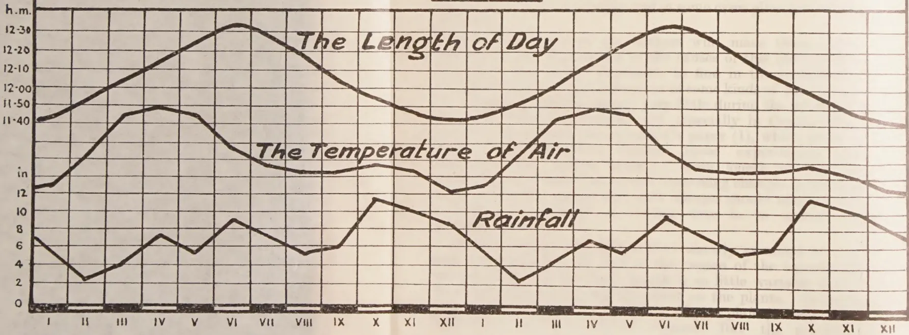
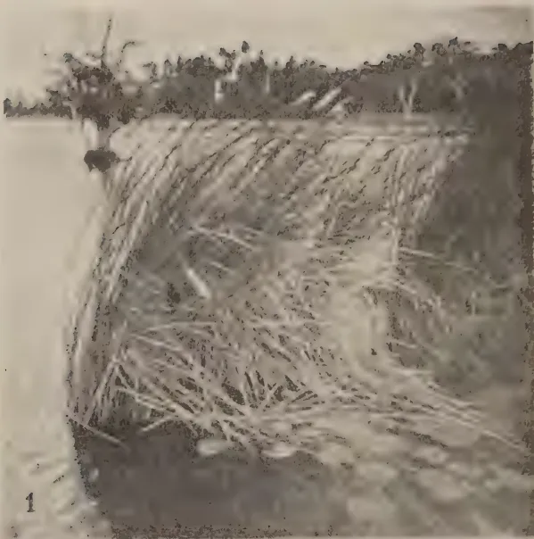
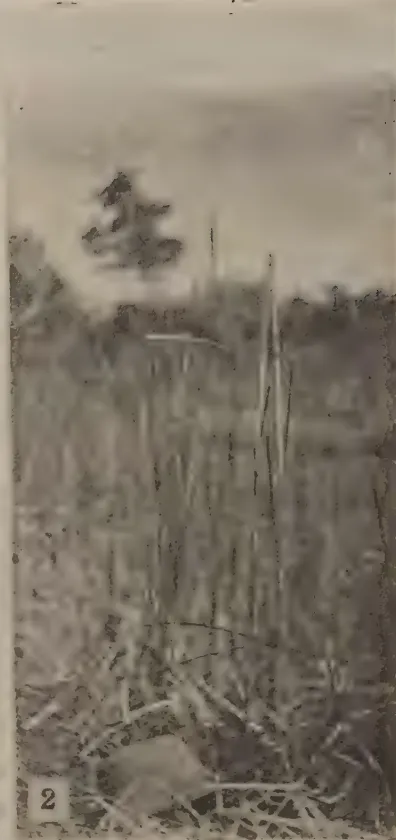
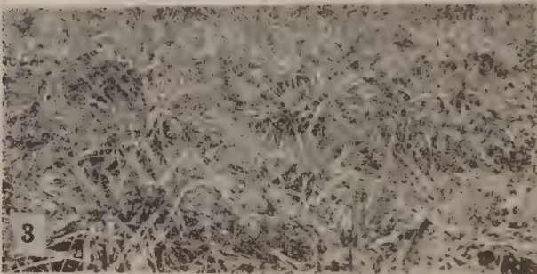
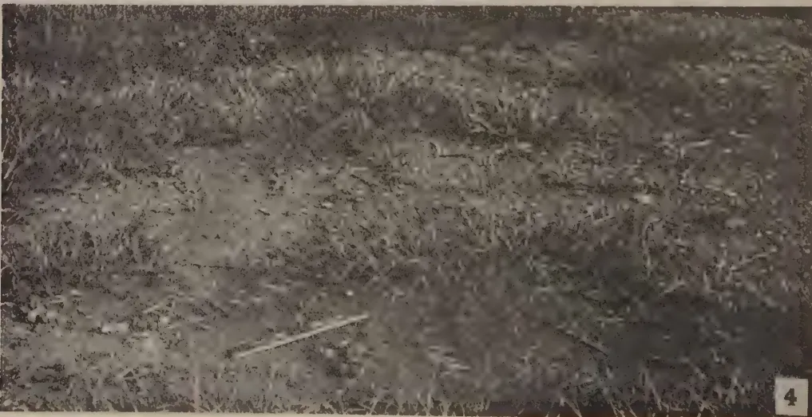
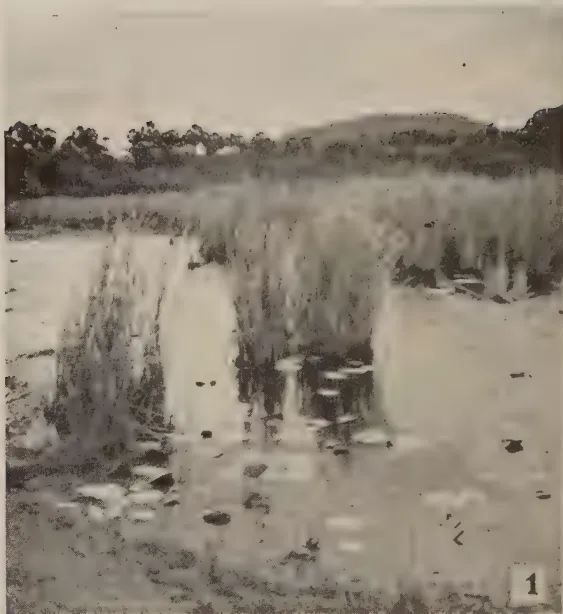
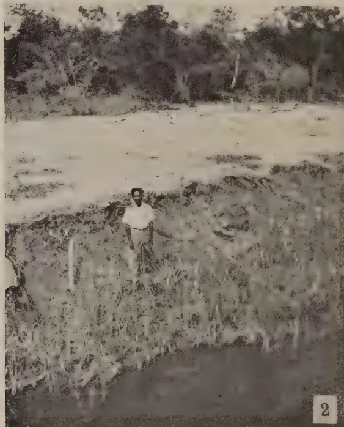
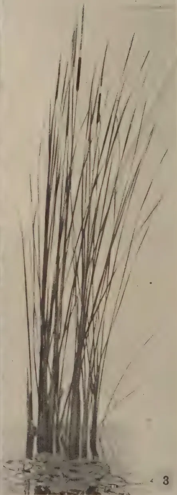
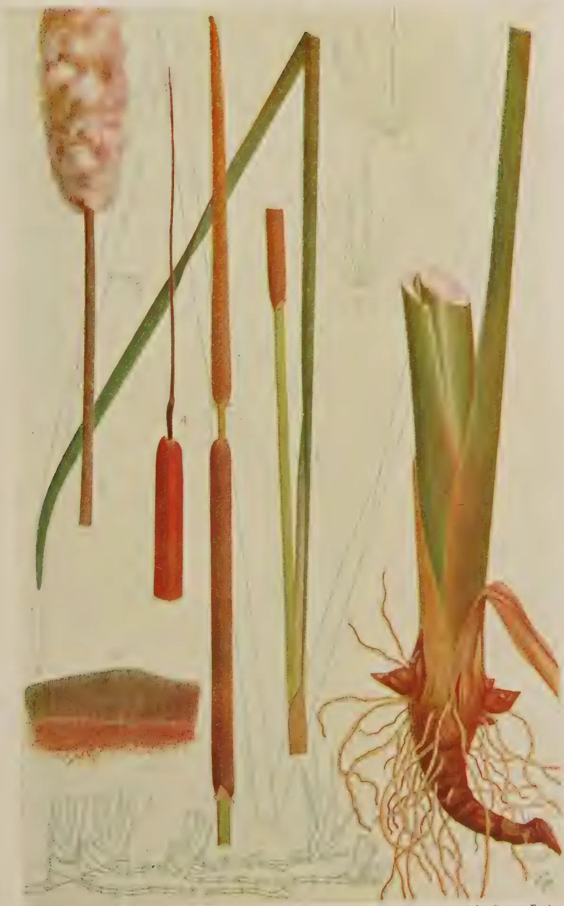
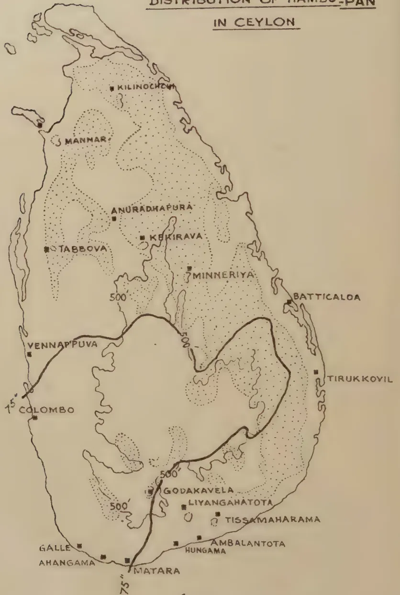

VOL. XCV
PERADENIYA, OCTOBER, 1940.
No. 4
| Page | |
|---|---|
| Editorial .. .. . | 203 |
| The Factor which Stimulates to Develop the Rice into Flowering under Tropical Conditions. By Basil Scripchinsky .. .. | 205 |
| Trials with Cotton in Ceylon. By J. C. Haigh, Ph.D. (Lond.) .. | 212 |
| Hambu, Typha javanica Schnizlen. By J. E. Senaratna, B.Sc. (Lond.), F.L.S. .. .. . | 218 |
| Programme of Manuring for Replanted Rubber Clearings .. | 225 |
| Manuring of Young Palms .. .. . | 227 |
| Physical Properties of Soils that Affect Plant Nutrition .. | 232 |
| The Nutritive Value of Rice .. .. . | 239 |
| War-time Manuring .. .. . | 249 |
| Minutes of the Fifty-third Meeting of the Rubber Research Scheme .. | 255 |
| Minutes of the Fifty-first Meeting of the Board of Management, Coconut Research Scheme .. .. . | 259 |
| Animal Disease Return for the Month ended September, 1940 .. | 262 |
| Meteorological Report for the Month ended September, 1940 .. | 263 |
1—J. N. 98163 (10/40)
[Faint page: no legible print of its own could be verified; text withheld (stage 4 review list)]
OCTOBER, 1940
THE note which the Botanist of the Department of Agriculture publishes in this number describing the preliminary stages of a trial he has in hand for selecting a strain of cotton marked by the characteristics of high yield and superior quality naturally provokes the questions what progress has been made in the development of this crop since its introduction fourteen years ago and what prospects there are of its acquiring an important place in the agricultural life of the country. The market price of cotton rose rapidly in the twenties till it stood in the neighbourhood of Rs. 30 for a hundredweight of unginned cotton. Since a moderately-well-cultivated chena would yield not less than 4 cwt. of seed cotton this price was very attractive, and cotton chenas became very popular specially in the Hambantota District where the Department of Agriculture carried out an intensive campaign to spread the cultivation of cotton. The peasants had hardly the time to recover from the shock of these large profits when the depression intervened and the commodity became a drug in the market and it would not find a purchaser at Rs. 8 for a hundredweight. Cotton practically went out of cultivation.
A second stage in the history of the crop began with an agreement between the Government and the proprietors of the Spinning and Weaving Mills, Wellawatta, by which in consideration of certain guarantees given by the Government regarding (a) the exemption from import duty of raw cotton grown within the British Empire (not including Palestine and Soudan) and (b) maintenance of the existing import duty on cotton yarn, the Mills undertook to buy unginned cotton of good quality delivered at Wellawatta at Rs. 12 a hundredweight. The Department of Agriculture undertook to collect the village cotton and deliver it at the Mills without charging anything for the organization required for the operation and recovering from the growers out of Rs. 12 only the direct handling charges such as railway freight and cart hire. This arrangement gave a new stimulus to the crop. The following is a statement of
204the quantities of cotton of all grades handled under this scheme during the last five years and of the payments made to the growers :—
| Quantity purchased. | Price paid to Cultivators. | |||||
|---|---|---|---|---|---|---|
| Cwt. | qr. lb. | Rs. | c. | |||
| 1936 | .. | .. | 3,014 | 3 12 | 30,705 | 98 |
| 1937 | .. | .. | 4,004 | 1 13 | 41,695 | 29 |
| 1938 | .. | .. | 3,726 | 0 11 | 38,245 | 70 |
| 1939 | .. | .. | 1,605 | 0 24 | 17,171 | 76 |
| 1940 | .. | .. | 2,329 | 3 5½ | 24,259 | 66 |
The decline in the last two years has been attributed to several causes the chief amongst which are the unseasonal rains—dry weather in the growing season and heavy rains at harvest—and the disinclination of some of the revenue officers to be liberal in the issue of chena permits for growing cotton. When due allowance has been made for these factors, it is clear from these figures that cotton growing is not an expanding agricultural industry; nor can expansion go very far on a basis of chena cultivation.
The future of the crop lies in the establishment of permanent cotton fields: that is to say in making cotton an arable crop which will find a periodical place in a regular rotation of crops. This development may take place both on channel-irrigated lands and rain-fed lands—in the dry zone in either case because the wet zone is unsuitable for cotton. The possibility of maintaining a comparatively high average rate of yield by rotational cultivation on rain-fed lands has been demonstrated in departmental stations for a number of years. But the dry zone villager has been in no hurry to copy this method largely because he does not own sufficient land, and, if he owned the land, he does not own the necessary capital to reclaim it from forest and bring it under the plough. A trial for the purpose of popularizing this practice is in progress at Kurundankulam, two miles out of Anuradhapura, where a few selected farmers have been settled on land reclaimed and equipped with the necessary implements by Government. While the results so far obtained are not unpromising, the uncertainty of the incidence of rainfall makes unirrigated cotton a precarious enterprise. A surer basis of expansion would be the incorporation of the crop in a rotation on irrigated lands. The chief obstacle to this is the fixed prejudice in favour of paddy as the only crop under irrigation. Propaganda for dispelling this prejudice must be preceded by trial and demonstration. Hitherto the Department has neglected this problem; but a Departmental Committee set up last year has the trials in hand, and it is hoped to lay down demonstrations as soon as the trials have yielded positive results. These activities open an avenue of hope for the cotton growing industry in Ceylon and we welcome the efforts of the Botanist to be ready to keep genetical achievement abreast of the work of prospective expansion.
205Basil Scripchinsky,
Voroshilovsk, Caucasus, U. S. S. R.
[This article is published as received with only a few minor amendments so that both the style and the argument of the writer may remain intact. Although the composition is unorthodox the meaning is sufficiently clear.—Ed., The T. A.].
THE theory of the stage development of plants, created by Lyssenko, gives the possibility to explain and control the processes of flowering by a lot of plants. It is known that for many plants the transition from the vegetative growth to the reproduction depends on two stages of development: on the stage of vernalization and on the photo-stage. The author of this paper has studied these stages of rice during three years on the Experiment Rice Station at Krasnodar (U. S. S. R.). In consequence of this work it was established that the rice has nearly no stage of vernalization (29). This conclusion was confirmed through a series of experiments, which were made by other investigators (2, 3, 5, 12, 13, 14, 23).
On the other hand it grew evident that the photo-stage has an immense significance for the rice. This conclusion is also confirmed by a series of experiments which were made by some other investigators who have studied the photoperiodism of the rice (4, 6, 7, 17, 18, 22, 27, 28, 30).
During this work the author paid attention to the following fact. In some parts of the tropics (India, Ceylon) experiments were conducted at different dates of sowing which gave astonishing results. (See Table I.)
206TABLE I.Number of Days from the Date of Sowing till the Heading (or Flowering) of the Rice which was sown at different Times (Ceylon-Peradeniya ; India-Coimbatore).
| The Time of Sowing | Peradeniya, Ceylon | Coimbatore-India | |||
|---|---|---|---|---|---|
| Lord and De Silva (19), 1928-29 | Haigh (15) 1933-35 | Ramiah (24) 1925-26 | Ramiah (24) 1927-28 | ||
| Mawi | Mawi B-11 | Heenati L-CPY-15 | p.l. No. 24 | p.l. No 24. | |
| January .. | 302 | 344 | 83 | 104 | 130 |
| February .. | 220 | 312 | 95 | 224 | 231 |
| March .. | 175 | 300 | 99 | — | — |
| April .. | 165 | 256 | 132 | — | — |
| May .. | 120 | 232 | 125 | — | — |
| June .. | 100 | 190 | 95 | 138 | — |
| July .. | 90 | 173 | 90 | 118 | 113 |
| August .. | 142 | 159 | 94 | 98 | 98 |
| September .. | 125 | 141 | 88 | 90 | 85 |
| October .. | 135 | 197 | 102 | 94 | 88 |
| November .. | 142 | 276 | 88 | 91 | 116 |
| December .. | 302 | 343 | 90 | 95 | 98 |
This table shows that the vegetative period of all kinds of rice changed with the variation of dates of sowing. The behaviour of the different kinds is unlike and in some cases gives astonishing difference.
Nevertheless none of the authors who made these experiments gave any explanation of the causes of this phenomenon. It seemed that it was impossible to find in the environment the causes of this strange behaviour of some kinds of rice because the climatic conditions change very little during the whole year in South India (Coimbatore) and especially in Ceylon (Peradeniya). In an anonymous author's paper (1), which gives an account of Lyssenko's theory, these experiments were discussed. This author writes: "Since length of day and temperature are said to be factors controlling changes in development, it does not appear why such changes should take place as a result of a change of sowing date in so uniform an environment".
Further, Garner and Allard have already surmised in their first communication (8) that in the region of the equator the natural change in the day's length is so little variable that it does not make a photoperiodic effect on the plants. In consequence of such opinion the study of the photoperiodism was insufficient in the tropical regions. But the previously
interval between the sowing and plowing of Ceylon paddies.
![A line graph showing monthly data for Temperature of Day, Temperature of Air, and Rainfall. The x-axis represents months from XII to I. The y-axis has two scales: the left scale is in degrees Fahrenheit (°F) from 4 to 8, and the right scale is in hours (h) from 11:40 to 12:30. The 'Temperature of Day' curve (thick line) peaks in April at approximately 12:25h. The 'Temperature of Air' curve (thin line) peaks in April at approximately 11:45h. The 'Rainfall' curve (thin line) shows peaks in October and April.](76af23e4fb1a7fd6a571a13693c20537_5_img.webp)
| Month | Temperature of Day (°F) | Temperature of Air (°F) | Rainfall (inches) |
|---|---|---|---|
| XII | 78 | 74 | 0 |
| XI | 79 | 75 | 0 |
| X | 80 | 76 | 10 |
| IX | 81 | 76 | 5 |
| VIII | 82 | 76 | 5 |
| VII | 83 | 77 | 8 |
| VI | 84 | 78 | 5 |
| V | 85 | 79 | 4 |
| IV | 86 | 80 | 6 |
| III | 85 | 79 | 4 |
| II | 84 | 78 | 2 |
| I | 83 | 77 | 10 |
2. D. O. 29. 10. 40
The effect of the length of day on the interval between the sowing and plowing of Ceylon paddies.
LORD AND DE SILVA
MAWI
HAIGH
MAWI-B11
HAIGH
HEENATI-I-CPI-15

The figure consists of three horizontal bar charts at the top, each representing a different location, and a line graph at the bottom showing environmental data over a 24-month period (I-XII).
Top Section: Sowing and Plowing Intervals
Bottom Section: Environmental Data
The bottom panel is a line graph on a grid showing three variables over a 24-month period (I-XII):
The x-axis is labeled with months I to XII, repeated twice.
S. G. O. 29. 10. 40
207mentioned experiments clearly demonstrated that in the tropical regions the natural day's length change stipulates also a delay or an acceleration of heading and flowering of rice.
For the confirmation of this thesis we shall examine the behaviour of the rice which was sown at different dates in Peradeniya. We connected the vegetative periods of these sowings of rice with the natural length of day and the principal elements of the weather. The natural length of day was calculated for Peradeniya by means of tables of day's length. The temperature of the air and the amount of rainfall taken from meteorological reports which had been published monthly in The Tropical Agriculturist (20).
These tables give not only monthly values of air temperatures and the amount of rainfall for 1929, but show the difference with the average. We have calculated the average of the temperature and of the rainfall according to this difference. All the dates were taken on Kandy Meteorological Station (See Table II.).
TABLE II.
Meteorological Data for Kandy.
| Month | Temperature of Air | Mean humidity for 1929 | Rainfall | ||||
|---|---|---|---|---|---|---|---|
| Mean daily shade for 1929 | Difference from Average | Average | Amount in inches for 1929 | Difference from Average | Average | ||
| January .. | 75.0 | + 0.5 | 74.5 | 70 | 0.49 | — 4.82 | 5.31 |
| February .. | 76.4 | + 0.3 | 76.1 | 66 | 0.42 | — 1.86 | 2.28 |
| March .. | 78.1 | — 0.3 | 78.4 | 72 | 4.78 | + 0.71 | 4.07 |
| April .. | 77.9 | — 1.1 | 79.0 | 80 | 11.77 | + 5.01 | 6.76 |
| May .. | 78.9 | + 0.2 | 78.7 | 78 | 2.44 | — 3.31 | 5.75 |
| June .. | 76.7 | + 0.1 | 76.6 | 79 | 11.89 | + 2.54 | 9.35 |
| July .. | 76.2 | + 0.6 | 75.6 | 79 | 7.25 | — 0.30 | 7.55 |
| August .. | 76.5 | + 1.2 | 75.3 | 76 | 1.66 | — 4.07 | 5.73 |
| September .. | 77.0 | + 1.7 | 75.3 | 78 | 6.52 | + 0.52 | 6.00 |
| October .. | 76.4 | + 0.5 | 75.9 | 77 | 2.67 | — 8.99 | 11.66 |
| November .. | 76.0 | + 0.6 | 75.4 | 80 | 12.51 | + 2.04 | 10.47 |
| December .. | 75.6 | + 1.5 | 74.1 | 80 | 9.07 | + 0.16 | 8.91 |
The comparison of the vegetative periods of rice with environments are shown in fig. I.
This figure shows that the behaviour of these kinds on the whole is unlike. But the kinds of rice "ma-wi" behaved approximately equally in Haigh's experiment as well as in Lord and De Silva's. The heading corresponding to most of the dates of sowing took place in Lord and De Silva's experiments from the end of August till the end of October and in Haigh's experiment from December till January. If we shall examine the
208change of natural day's length so we shall observe that in Lord's experiments the heading began only after the shortening of the long summer days. In Haigh's experiments the heading began only when the shortest winter days came.
The kind of rice " heenati I-CPY-15 " behaved completely differently. In this case all dates of sowing had nearly an equal length of the vegetative period.
This phenomenon might be explained in the following way:—The " ma-wi " kinds of rice are generally sown in " maha " season (in August). Therefore their growth before heading takes place as a rule during August-December with the condition that the length of day is shortening uninterrupted. The kind of rice " heenati I-CPY-15 " is generally sown in " yala " season (in March) and therefore its growth before heading takes place as a rule during March-June with the condition that the length of day is lengthening uninterrupted.
Consequently the rices of " maha " season are adapting themselves to the shortening length of day and the rices of " yala " season to the lengthening days. This circumstance fully explains the behaviour of these kinds of rice sown at different dates.
As is shown in fig. I. there is no connection between the dates of heading and the temperatures of air as well as the amount of rainfall.
It is very interesting to make a comparison of these experiments with the experiment which had been done by Garner and Allard with soybean in a greenhouse (10). Here is an indisputable analogy between the behaviour of the rice variety " ma-wi " and the Biloxi soybean (short day type). On the other hand the " heenati " rice behaved like the Mandarin soybean (indifferent type).
A still more bright example gives Rhind's experiment (25) with sesamum which had been made at Mandalay, Burma (lat. 22°N). Here we can notice a full analogy in the behaviour of " ma-wi " kinds of rice and the " late " kinds of sesamum (Burmese " hnangyi "), which proved to be the typical short day plant. The yala's kinds of rice behaved analogically to " early " kinds of sesamum (Burmese " hnanyin "), which do not react on the length of day. It is characteristic that the " early " kinds of sesamum in Burma are sown in April and harvested in August and September. The " late " kinds are sown in September and harvested in December and January.
Therefore, it is necessary to state that the least variation of the day's length influences photoperiodically on some native plants in the tropical regions. To verify this conclusion the kind of rice " ma-wi B-11 " must be sown in Ceylon in December
209or in January and after the germination it must be cultivated with artificial shortened days (11h. 40m. or less). By these conditions its heading will take place in April or in May, while the same rice grown in natural conditions will be heading in November or in December. Apparently the "heenati I-CPY-15" will not react on the artificially shortened days.
On the ground of these experiments we have the right to make the following conclusion :—
In the tropical region of South India and of Ceylon there are two groups of rice kinds. To the first group belong such kinds which demand for their photo-stage short (or uninterrupted shortening) days (the kinds of the "maha" season). To the second group belong such kinds which pass through the photo-stage by every kind of variation of the natural day's length.
Moreover, the material of this article gives the right to make still a whole row of general conclusions and suppositions.
1. The opinion must be refuted that the natural change in day's length does not cause the photoperiodic reaction of the native plants in the tropical regions, which are in the neighbourhood of the equator. It is obvious that the native plants, which have grown during many hundreds of years in such conditions, adapted themselves to the small variations in day's length and possess a big sensibility. Therefore they react on a little variation on the tropical's day's length not less than the plants of temperate climate do on the large variation on the day's length. On the ground of this conclusion it shall be made a reconsideration of the old view which concerns the periodicity of the development of the plants in the tropical regions. It is possible that Volkens' (31), Klebs' (16) and Molish's (21) facts about the periodicity of life processes in the tropics (for instance fall of the leaves, &c.) will obtain an entirely different significance, if the photoperiodic reaction will be taken into account.
2. These conclusions have confirmed the point of view which had been surmised by Garner and Allard in 1920 and was evolved in 1923 and in 1930 (8, 9, 10), that the plants have a so-called "critical length of day for flowering". These experiments show that at least for some plants this point can be fixed very exactly.
3. These conclusions refute once more the old theory which had been expressed by Reomur in 1735 and is revived now by Selaninov (25) in U. S. S. R. that the arithmetical sum of degrees of heat can be the index for the length of the vegetative period of plants. But in reality the sum of the so-called "active temperatures" for one date of sowing will be three times more than for another date.
210Moreover all our data raise doubts of the correctness of Gustchin's conclusion that "the flowering of the rice does not come in natural conditions before the moment, when the temperature will reach its culmination point and after this will go down" (11). Fig. I. shows that the fall of the temperature from its culmination point, at least in the tropics, has no importance for the heading of the rice.
4. Finally, the quoted data raise the question: What is the cause of the passing of the rice through its photostage—either the day's length which crosses the critical point or the process itself of the uninterrupted shortening day's length. The examination of this problem in the condition of Ceylon is very interesting because it is possible that it will discover some new important regularities in the processes of the plant's development.
The author desires to express his grateful thanks to the chief of the section of rice in the Institute of Plant Industry of U. S. S. R., D. S. Ivanov, for his kind interest in this work and his amiable help.
J. C. HAIGH, Ph.D.,
BOTANIST
THIS article describes a cotton trial carried out during the maha 1939-40 season, with the object of determining the relative performance of three varieties of imported cotton against the local Cambodia, and the effect of nitrogenous and potassic fertilizers. The imported cottons, which were supplied by the Cotton Specialist, Coimbatore, were a strain of U-4/4 from South Africa, one of SG29 from Uganda, and one of Cambodia CO2 from India; all are medium-stapled American types. They were treated with sulphate of ammonia at three levels and sulphate of potash at two levels, in a split-plot experiment in which the main plots represented all combinations of the manurial treatments, replicated three times; on each plot were superimposed subplots of four varieties. Each subplot contained 49 plants, in rows 3 feet apart with the plants spaced 2 feet in the row; of this number, a border of 24 plants was discarded at harvest, and an inner area of 25 plants provided the yield records of the plot. The trial was carried out at Bata-ata, in the Southern Province, on a medium loam soil.
Seeds were sown three per hole in October, 1939, and the seedlings were later thinned to two per hole. The germination of the Cambodia CO2 seed was very poor, and the final stand was only 41%; germination in the other three varieties was good, and stands of 97%, 98% and 99% were obtained. Manures were applied in the rows, one month after sowing. The season was a very dry one as will be seen from the rainfall record below; the plants, though healthy, were bronzed and stunted, and yields were poor.
TABLE I.
Rainfall records
| Inches of Rain. | No. of Rainy Days. | ||
|---|---|---|---|
| 1939 October | .. | 2.46 | 8 |
| November | .. | 6.94 | 18 |
| December | .. | 4.91 | 8 |
| 1940 January | .. | 0.21 | 1 |
| February | .. | 0.34 | 2 |
| March | .. | 2.52 | 4 |
17.38 |
41 |
The crop was picked in February and March, 1940 ; the weight of seed cotton was recorded for the inner part of each subplot, and a count was made of the number of plants that had contributed to this crop. These data are shown in Table II. which shows also the layout of the trial.
(For Table II. see page 214.)
The analysis of variance for yield, uncorrected for plant number, is given in Table III.
TABLE III.Analysis of Variance of yield| D.F. | Sum of Squares. | Mean Square. | Variance Ratio. | |
|---|---|---|---|---|
| Between classes (17) | ||||
| Blocks | 2 | 465.19 | 232.59 | 18.53*** |
| Treatments (5) | (68.40) | (13.68) | (1.09) | |
| N | 2 | 4.86 | 2.43 | 1 |
| K | 1 | 11.66 | 11.66 | 1 |
| NK | 2 | 51.88 | 25.94 | 2.06 |
| Error (a) | 10 | 125.48 | 12.55 | |
| Within classes (54) | ||||
| Varieties | 3 | 1,405.82 | 468.61 | 53.62*** |
| Interactions (15) | (506.86) | |||
| VN | 6 | 176.81 | 29.47 | 3.37* |
| VK | 3 | 24.62 | 8.21 | 1 |
| VNK | 6 | 305.43 | 50.90 | 5.82** |
| Error (b) | 36 | 314.57 | 8.74 | |
| Total | 71 | 2,886.32 |
Significant ratios are indicated by asterisks *5%, **1%, ***0.1%
Standard error of manurial totals = 12.27 oz.
Standard error of varietal totals = 12.54 oz.
There are no significant differences between manurial treatments ; odds are 100 to 1 that U-4/4 is better than Cambodia CO2 or Local Cambodia and 20 to 1 that SG 29 is better than either Cambodia strain. U-4/4 and SG 29 are not significantly different. In view of the absence of a general effect of manurial treatment, the positive interactions between variety and manuring are probably the result of the very high level of varietal differences combined with a negligible manurial effect ; they may therefore be ignored.
214
TABLE II.
| Block I. | Block II. | Block III. | |||||||||
|---|---|---|---|---|---|---|---|---|---|---|---|
| A | B | C | G | C | B | C | A | D | D | C | |
| 10 | 3 | 8 | 12 | 13 | 8 | 15 | 21 | 20 | 22 | 19 | |
| 25 | 14 | 25 | 25 | 24 | 15 | 24 | 25 | 25 | 25 | 22 | |
| B | A | B | A | D | C | A | C | B | A | B | |
| 4 | 7 | 5 | 10 | 12 | 16 | 14 | 35 | 7 | 25 | 7 | |
| 8 | 25 | 13 | 25 | 25 | 25 | 24 | 24 | 6 | 25 | 11 | |
| C | C | A | B | A | A | B | D | C | C | A | |
| 13 | 13 | 19 | 3 | 16 | 17 | 6 | 20 | 25 | 21 | 16 | |
| 25 | 25 | 25 | 10 | 25 | 25 | 14 | 25 | 25 | 25 | 25 | |
| D | D | D | D | B | D | D | B | A | B | D | |
| 19 | 15 | 16 | 21 | 4 | 10 | 16 | 5 | 14 | 6 | 15 | |
| 25 | 24 | 25 | 25 | 14 | 24 | 25 | 9 | 25 | 14 | 25 | |
| N0K0 | NiK1 | N2K0 | N0K1 | NiK0 | N2K1 | N2K0 | NiK1 | N2K0 | N0K1 | NiK0 | |
A—Local Cambodia.
B—Cambodia CO2
C—U.4/4
D—SG 29
N0—no nitrogen
Ni—sulphate of ammonia at 100 lb./acre
N2—sulphate of ammonia at 175 lb./acre
K0—No potash
Ki—sulphate of potash at 50 lb./acre
Figures in roman type represent yields of seed cotton in oz.; figures in italic represent numbers of plants producing that yield.
Total yields of varieties and treatments in oz. seed cotton (number of plants in brackets).
The analysis of variance of plant number is given in Table IV.
TABLE IV.| D.F. | Sum of Squares. | Mean Squares. | Variance Ratio. | |
|---|---|---|---|---|
| Between classes (17) | ||||
| Blocks | 2 | 19.11 | 9.55 | 3.27 |
| Treatments (5) | (20.41) | (4.08) | ||
| N | 2 | 2.11 | 1.05 | 1 |
| K | 1 | 0.35 | 0.35 | 1 |
| NK | 2 | 17.95 | 8.97 | 3.07 |
| Error (a) | 10 | 29.22 | 2.92 | |
| Within classes (54) | ||||
| Varieties | 3 | 2,869.27 | 956.42 | 296.1*** |
| Interactions (15) | ||||
| VN | 6 | 31.11 | 5.18 | 1.60 |
| VK | 3 | 0.38 | 0.13 | 1 |
| VNK | 6 | 37.25 | 6.21 | 1.92 |
| Error (b) | 36 | 116.24 | 3.23 | |
| Total | 71 | 3,122.99 |
Standard error of varietal totals = 7.62
Standard error of manurial totals = 5.92
Odds are 1000 to 1 that the stand of Cambodia CO3 is inferior to any of the other three. There are no effects of treatment on plant number.
A further analysis of yield is now made by eliminating the effect of plant number by an analysis of covariance, and the results are shown in Table V.
TABLE V.Analysis of covariance of yield and plant number
| D.F. | Number of Plants (x2). | Sum of Squares and Products. xy. |
Yield in oz (y2). | b. | c2/A. | |
|---|---|---|---|---|---|---|
| Blocks | 2 | 19.11 | 67.89 | 465.19 | 3.5526 | 241.19 |
| Treatments | 5 | 20.41 | 15.85 | 68.40 | 0.7776 | 12.31 |
| Error (a) | 10 | 29.22 | 8.89 | 125.48 | 0.3042 | 2.70 |
| Varieties | 3 | 2,869.27 | 1,937.82 | 1,405.82 | 0.6754 | 1,308.75 |
| Interactions | 15 | 68.74 | 5.99 | 506.86 | 0.0871 | 0.52 |
| Error (b) | 36 | 116.24 | 22.33 | 314.57 | 0.1921 | 4.29 |
| Total | 71 | 3,122.99 | 1,834.65 | 2,886.32 |
| D.F. | Sum of Squares. | Mean Squares. | ||
|---|---|---|---|---|
| Regression (a) | 1 | 2.70 | 2.70 | R |
| Deviations from regression | 9 | 122.78 | 13.64 | — < 1 |
| 10 | 125.48 | D | ||
| Regression (b) | 1 | 4.29 | 4.29 | R |
| Deviations from regression | 35 | 310.28 | 8.87 | — < 1 |
| 36 | 314.57 | D |
In neither case is there any significant difference between the regression of yield on plant number and the deviations from that regression; in other words, there is no marked relationship between yield and plant number. The inference is that the significance of the uncorrected yields will be unaltered if a correction is made for plant number. The correction has been made, however, as an illustration of statistical procedure and in order to test the correctness of the inference, and the corrected yields are shown in Table VI.
TABLE VI.| Correction for stand—Varieties | |||||||
|---|---|---|---|---|---|---|---|
| Varieties. | Mean stand. | Mean Yield. | Corrected Yield. | ||||
| SG 29 .. | .. 24.67 .. | .. 3.68 .. | .. 0.707 .. | .. 16.44 .. | .. 17.15 .. | ||
| U-4/4 .. | .. 24.40 .. | .. 3.41 .. | .. 0.655 .. | .. 17.44 .. | .. 18.09 .. | ||
| CO2 .. | .. 10.06 .. | .. 10.93 .. | .. 2.100 .. | .. 6.22 .. | .. 4.12 .. | ||
| Local .. | .. 24.83 .. | .. 3.84 .. | .. 0.738 .. | .. 14.50 .. | .. 15.24 .. | ||
| Between SG29 and U-4/4 | .. 0.94 oz. | 0.995 oz. not significant |
| CO2 | .. 13.03 oz. | 4.157 oz. significant |
| Local | .. 1.91 oz. | 0.993 oz. not significant |
| U-4/4 and CO2 | .. 13.97 oz. | 4.083 oz. significant |
| Local | .. 2.85 oz. | 1.000 oz. significant |
| CO2 and Local | .. 11.12 oz. | 4.200 oz. significant |
| Treatments. | Mean stand. | Mean Yield. | Corrected Yield. | ||
|---|---|---|---|---|---|
| N0K0 .. | .. 20.17 .. | .. 0.82 .. | .. 0.249 .. | .. 14.00 .. | .. 14.249 .. |
| N0K1 .. | .. 21.42 .. | .. 0.43 .. | .. 0.131 .. | .. 14.00 .. | .. 13.869 .. |
| N1K0 .. | .. 21.67 .. | .. 0.68 .. | .. 0.207 .. | .. 12.00 .. | .. 11.793 .. |
| N1K1 .. | .. 20.75 .. | .. 0.24 .. | .. 0.072 .. | .. 15.17 .. | .. 15.239 .. |
| N2K0 .. | .. 21.33 .. | .. 0.34 .. | .. 0.106 .. | .. 13.75 .. | .. 13.644 .. |
| N2K1 .. | .. 20.58 .. | .. 0.41 .. | .. 0.123 .. | .. 13.00 .. | .. 13.123 .. |
The differences between corrected mean varietal yields, and the standard errors to which they are subject are set out below the table; with , at the 5% point, so that the odds are now 20 to 1 that the yield of Cambodia CO2 is inferior to that of other three, and also that U-4/4 is better than the local strain. Thus, correction for stand has affected the level of significance and has increased the inferiority of Cambodia CO2, as is seen from the corrected yield figures.
It must be observed that correction for stand is permissible only because the vacancies in the CO2 plots are entirely unconnected with any of the treatments imposed on the trial plants.
217SUMMARYAn experiment is described which attempted to compare yield of four varieties of cotton, with and without the addition of sulphate of ammonia and sulphate of potash.
2. In a very dry season, in which the crop received only 17.38 inches of rain, the plants showed no response to manuring.
3. There appeared to be significant differences in yield between the varieties, but the position was complicated by the fact that the seed of one variety had germinated very poorly, and there were less than half the number of plants that were produced by the other varieties.
4. Since the difference in germination was in no way connected with the treatments imposed on the trial, an analysis of covariance and a correction for stand were made. The corrected yields showed rather greater differences than had been apparent before correction, and indicated that one variety, Cambodia CO2, was markedly inferior to the other three, namely, SG 29, U-4/4 and local Cambodia.
I am grateful for the assistance of the Chemist of this department, who suggested the manurial treatments; to the Agricultural Officer, Southern, who provided the land for the trial; and to Mr. V. G. Dharmadasa, Agricultural Instructor, who supervised the agricultural operations.
218A WEED OF IRRIGATION IN CEYLON, RECENTLY
PROCLAIMED A DECLARED WEED UNDER
THE PLANT PROTECTION ORDINANCE
J. E. Senaratna, B.Sc. (Lond.), F.L.S.,
ASSISTANT IN SYSTEMATIC BOTANY
THE new irrigation schemes in the dry zone are likely to raise new biological problems. The environment is made more suited for plant growth and with the change a new succession of natural vegetation sets in. Unless proper precautions are taken to regulate this succession, weeds likely to become troublesome may appear. One of the most undesirable weeds of irrigation at present is hambu (Typha javanica Schnizl.)
In the May number of this journal an account was given of Gomphrena decumbens Jacq., a weed new to Ceylon, and likely to spread rapidly and cause immense damage, particularly to grazing grounds and future pastures, unless checked at once; in the June number, of Limnocharis flava (L.) Buchenau, a weed of rice fields, recently naturalized in Ceylon, and menacing rice cultivation. Both plants are exotics: the first, introduced from South India, with hay in horse-trucks or with grain, by the railway; the second, it is said, escaped from a private ornamental pond where it had been cultivated some fifteen years ago. These exotics come to assume pest proportions because, as stated in the May number, "a weed introduced to a new land is not in equilibrium with its environment: its natural competitors may be absent and if soil, climate and other conditions prove suitable, in the absence of its natural checking influences, the weed may spread and spread and overrun its newly-found home."
Hambu is an indigenous plant occurring in tanks and lagoons, in riverine estuaries and marshy places. Here again is an exhibition of the same ruling principle in nature: instead of an alien plant finding a favourable home in this Island, an indigenous plant finds a changed environment ideally suited to its requirements. Seeds carried by water, or wind-blown from an infested tank to a newly opened channel, germinate on the bare
This image is a scan of a blank page. The paper has a light beige or cream-colored tint. There are some very faint, blurry marks and artifacts scattered across the surface, which appear to be scanning noise or imperfections in the paper itself. No text, lines, or other graphical elements are present.
1

2

3

4
Photo by J. E. Senaratna
Block by Survey Dept.
PLATE III.
Fig. 1.—Hambu in water, in tank (Epalogama).
Fig. 2.—Hambu on bank of water-course (Tabbova).
Fig. 3.—Paspalum dilatatum at Nikaveratiya.
Fig. 4.—Kikuyu grass six weeks after planting (Peradeniya. The scale is 14½ inches long).



Photo by J. E. Senaratna
Block by Survey Dept.
PLATE II.
Fig. 1.—Hambu in a tank (Epalogama, July, 1940).
Fig. 2.—Hambu in a water-course) Tabbova, July, 1940).
Fig. 3.—Habit of hambu.
soil just above water-level and the plants grow rapidly and spread vegetatively to form tufts which soon unite into long continuous masses of the reed along the shallower parts and banks of the channel which the weed causes to silt up gradually.
In appearance, hambu resembles luxuriant illuk grass, Imperata cylindrica (L.) Beauv., and is 4 to 8 feet high, but the female flower spikes are very conspicuous in their cylindrical form and characteristic cinnamon-brown colour, and the erect leaves show a very gradual spiral twist (of obvious advantage in wind-swept habitats).
Family : Typhaceae.
Typha javanica Schnizl. ex Zoll. Verz. Ind. Arch. Pfl. p. 77 (1854); Rohrb. in Verh. Bot. Ver. Brandenburg XI, p. 98 (1869); (as a subspecies of Typha angustifolia L.) Graebner in Engl. Pflanzenreich IV. viii, p. 13 (1900); Typha latifolia Moon Cat. Pl. Ceyl. p. 61 (1824), non L.; Typha angustifolia Thw. Enum. Pl. Ceyl. p. 331 (1864), non L.; Typha elephantina Thw. loc. cit., pro synon., non Roxb.
Local names : hambu (Sinhalese); sampu, (sāppai in the Batticaloa District) (Tamil). The above names are also used with the suffix ‘-pan’. “Bulrush” has sometimes been used for the plant but as the term also denotes the genus and several species of it and other plants such as Cyperus Papyrus L. and Scirpus lacustris L., to avoid confusion it is best to use the local name “hambu”, just as the Typha species of Australia are known there by the local name “cumbungi”.
Description : A tufted, perennial, glabrous, aquatic, marsh or lacustrine herb, generally gregarious, with conspicuous, erect, aerial stems and leaves, and a system of underground rhizomes with fibrous roots; rhizomes of two kinds: at the base of aerial stems, short, stout, erect, rhizomes with crowded nodes and solid with reserve food; and arising from these, on either side, narrow, cylindrical, horizontal, stolons up to 3 feet or more long and to inch in diameter, of white spongy tissue with a central vascular axis about inch in diameter, with nodes 2 to 3 inches apart but shorter at the base and apex and scaly leaves about 2 inches long, turning upwards and thickening at the apex to give rise to an aerial stem; roots fibrous, of three kinds: from the stout, erect rhizomes, (1) long, stout, anchoring roots with many thin laterals, (2) absorbing roots similar to the anchoring roots but floating and with a dense mass of innumerable, fine short laterals packed tightly together all round the root giving it a bottle-brush-like appearance, the upper side sometimes covered with epiphytic algae which impart to it a greenish colour; and from the slender, horizontal stolons (3) short, thin, adventitious roots arising round the stem generally
220at the nodes ; aerial stems erect, unbranched, terete, smooth, solid, generally submerged at base up to 3 feet or less, 4 to 8 feet high, 3 to 5-noded, with internodes about 6 inches long, ending in inflorescences ; innovations extravaginal ; leaves distichous, linear, erect, rising above the water, mostly basal, about the same length as the aerial stems or shorter or longer ; leaf sheaths entirely clasping the stem, with sides overlapping, sometimes with one side fused with the adjacent side of the opposite sheath, up to half an inch thick, containing much aerenchyma, gradually narrowed upwards, up to 2 feet long, with apex auricled or not ; leaf blades linear, 3 to 8 feet long, to inch broad, containing much aerenchyma, base semi-elliptic in section with very narrow firm margins directed inwards, gradually merging to narrowly biconvex isobilateral, with a very gradual spiral twist of 3 to 5 turns, bluntly acute at apex, with margin entire, veins parallel and inconspicuous ; inflorescences terminal, superposed, with flowers densely crowded into compact spikes, subequal in length, 4 to 12 inches long, with longer caducous bracts ; the lower spike (one, seldom two, separated by a gap of about an inch) female, cylindrical, holosericeous, to inch in diameter, cinnamon-brown in colour ; the upper (one) male, terete, to inch in diameter, sometimes continuous with the female but generally separated by a gap of to inches, male flowers deciduous soon after anthesis ; male flowers with simple, or more usually forked, hairs (bracteoles) which before anthesis and beyond the anthers are curved and sub-apically flattened and reddish brown in the flattened part ; stamens usually 3, sometimes 1 to 6, with filaments connate at base and linear basi-fixed yellow anthers with greenish umbonate tips and lateral dehiscence ; pollen shed as single grains ; female flowers subsessile, to inch long, with a bracteole widened elliptically at apex and about as long as the hairs ; gynophore short with a few closely superposed irregular whorls of filiform hairs at base ; ovary fusiform, 1-celled, with an ovule pendulous from top of cell ; stigma linear ; flowers mixed with pistillodes and hairs ; fruit minute, on elongated gynophore, fusiform, with easily separable seed ; seed narrowly ellipsoid, with orthotropous embryo.
The plant flowers from June to November.
Distribution : In Ceylon (see map), in tanks and lagoons, water courses and irrigation channels, marshy places and paddy fields in the low country (below 500 ft. elevation) chiefly in the dry zone, (less than 75 inches annual rainfall) ; Kilinochchi, in ponds and marshes* ; near Mannar ; Anuradhapura, in tanks and irrigation channels* ; near Kekirava, in Epalogama tank* ; Tabbova, in water courses and irrigation channels* ; Minneriya, in irrigation channels and paddy fields* ; Batticaloa ; Tirukkovil ;
Substitute for the legend on the coloured plate facing page 220 of The Tropical Agriculturist, October, 1940, the following :—
PLATE I.—Hambu : 1. plant ; 2. top of aerial stem ; 3 to 5. inflorescence in various stages ; 3. male spike above at anthesis with female spike below, and remains of bracts ; 4. after shedding of male flowers ; 5. with mature fruits ready to be blown off ; 6. part of floating root ; 7. underground stem system ; 8. female flower ; 9. fruit ; 10. seed ; 11, 12. sections of leaf blade at points indicated. (Magnification : fig. 7 ; fig. 8, 9 ; fig. 10 ; rest .)
In the legend on the diagram facing page 207 of the same number of The Tropical Agriculturist alter “plowing” to read “flowering”.

A detailed botanical illustration of Typha javanica. The illustration includes several components: a mature, elongated catkin with a brownish, fuzzy texture; a smaller, younger catkin; a single spikelet with a long, thin awn; a cross-section of a spikelet showing the internal structure; and the entire plant, including its long, green, lanceolate leaves and a complex, fibrous root system. The plant is shown growing in a body of water, indicated by a light blue background at the bottom.Hambu, Typha javanica Schnizlein.
Block by Survey Dept.
This image is a scan of a blank page. The paper has a light beige or cream-colored tint. There are a few very small, dark specks scattered across the surface, which appear to be scanning artifacts or dust particles. No text, lines, or other markings are present on the page.[Page not transcribed: OCR unreliable (stage 4 review list)]
DISTRIBUTION OF HAMBU-PAN
IN CEYLON

A map of Ceylon (Sri Lanka) showing the distribution of Hambu-Pan. The map includes the following features:
MAP OF CEYLON SHOWING
500' CONTOUR . ~~~~~
75" RAINFALL LIMIT —————
FOREST ..... (dotted pattern)
S. G. O. 31.10.40
221Vennappuva, in marshy places; Colombo; and about 8 miles further north at Kandana and Ja-ela, in water courses and marshes; Godakavela; Liyangahatota; near Ridiyagama tank, in ponds and marshes; near Galle; Ahangama, in marshes*; Matara; and about a mile further north at Tudava, in paddy fields and marshes*; Hungama, in Kalametiya Kalapuva (lagoon)*; Ambalantota, in paddy fields and marshes*; Tissamaharama. (Note: '*' after a name signifies that specimens in situ in the locality were seen by the writer).
The species occurs also in the Sunda Islands, Java, Timor, the Philippines, New Guinea, the Mascarenes, Mauritius, and the Seychelles.
Economic significance: Hambu may spread very rapidly in irrigation channels and its chief danger is in causing silting up of the channels. The tufts of stems and leaves retard the velocity of water-flow and collect and deposit silt which causes the channel bed to rise gradually. This process is also helped by the floating roots which are very efficient collectors of silt. As the bed of the channel rises the plant spreads inwards into the channel where the depth of water has now become less than 3 feet. Thus silting goes on continuously, accompanied by increase in area occupied by the weed and in due course the plant may completely cover the channel and choke it.
The weed may appear in paddy fields but there it can be easily killed out by proper drainage or by annual average cultivation of the fields.
Hambu has some usefulness. Just before it flowers, the leaves (පොපා) are cut off at the base, dried in the sun and woven into large mats used for covering threshing floors when the paddy crop is threshed. The leaves are suitable for local manufacture of paper.
Its uses, however, fade into insignificance when compared with its potential danger to irrigation. Hambu got out of control at Minneriya, and the Department of Agriculture had to clear it at a cost of about Rs. 20,000.
The extent of the damage that may be caused can be immense. In New South Wales, in the Murrumbidgee Irrigation areas (2,000 miles of supply and drainage channel) alone, £15,000 used to be spent annually directly as a result of infestation by the very similar and closely related weed cumbungi (Typha Muelleri Rohrb., and Typha angustifolia L. var. Brownii (Kunth) Kronf.) but still the problem remained. In 1936 the Council for Scientific and Industrial Research of Australia undertook the investigation, and after various experiments has succeeded in controlling the pest by a system of cutting followed by channel patrol, at an annual cost of little over £3,000.
222Propagation and dispersal.—Propagation is by seed and by vegetative means. A single plant may produce in a year up to 30 inflorescences each yielding 400,000 to 1,000,000 fruits. The fruits are very light and have a ring of hairs at the base, helping in dispersal by wind and water. The very light seeds are dispersed by the same agents. The seeds germinate on bare ground bordering the water and the plants spread upstream and downstream and in other directions by their long stolons until checked by the depth of water (about 3 feet) on the water side and lack of water on the land side. The plant is propagated vegetatively by pieces of rhizome and stolon becoming detached owing to trampling by animals, or by force of water current during floods, or other causes and carried by the current to new localities.
Methods of control.—After cutting off and burning all flower and seed spikes, removing the plant with its entire system of underground rhizomes and leaving on high land to dry is the most satisfactory method. Where the infestation is severe and the area involved is large a cheaper method can be employed for destroying the plants growing in water: the aerial stems and leaves are cut off at ground level under water at intervals of about 4 weeks, thus preventing the underground rhizomes from obtaining sufficient oxygen; insufficiency of oxygen causes the rhizomes to ferment and rot. The plants at or above water level have to be removed with the rhizomes as their roots can obtain oxygen from the soil atmosphere above the water table.
The work in Australia in controlling cumbungi is of especial interest to us. Chemical treatment was found to be ineffective or uneconomic. A system of cutting followed by channel patrol has been very successful. “Cumbungi was cut at ground level and below water at intervals varying from one to eight weeks, the first cutting being carried out at flowering time. It was found that only plants at, or above, the water’s edge survived frequent cutting, and that the frequency of cutting necessary depended on the depth of water in the channel. Thus in a channel of more than 15 inches depth it was found that 96 per cent. of the original population was killed with six cuttings at six-weekly intervals, and in a drain with a fluctuating water depth not exceeding 15 inches six cuttings at four-weekly intervals killed 88 per cent. of the plants. It is an interesting point that the population decreases almost by geometric progression, so that the work involved in each succeeding cutting is greatly decreased. Cutting was carried out with short bladed scythes or by means of a special horse drawn cutter constructed by the Commission.” . . . . “By maintaining the water level as high as possible in supply channels, the number of cuttings necessary was kept at a minimum.
223“At this point the channels are placed under patrol. In 1937 it was considered that 20 miles of supply and 20 miles of drainage channel would provide as much as one man could perform on a fortnightly patrol. Since then this length has increased and each patrolman in the Murrumbidgee Irrigation areas looks after 67 miles of drainage and supply channel. A horse and sulky is used for transport.
“The first duty of the patrolman is to remove the few plants remaining at the water’s edge. This is usually done by means of a hoe or mattock, and during the first season it is necessary to inspect the channels fortnightly. During December and January, it is necessary to prevent seedling infestation in drains. In his own section a patrolman soon recognizes the low spots in drains where pools form and seedling infestation is liable to occur. The seedlings are removed with rakes before their roots obtain a firm foothold in the silt . . . .
“In addition to preventing reinfestation by cumbungi, each man removes small obstructions from the channels such as the silt bars occurring at farmers’ outfalls into the drains . . . .
“The channel attendant superintending the patrolmen makes regular inspections of cleaned channels and enters into a field note book the work done in maintaining the channel and the efficiency of the channel. These notes are entered on indexed folio cards for quick reference, and at any moment the history of that channel may be obtained. The field notes are accepted in law as evidence of the work in maintaining the efficiency of the channel.
“By continuing the cycle of cutting and bringing channels under patrol during the October-March period each year since 1937, it has been possible to clear completely of cumbungi the worst infested 900 miles of the 2,000 miles of supply and drainage channel in the Murrumbidgee Irrigation areas. This length of channel is now being patrolled by 13 men at a cost of little more than £3,000 per annum. But the difference between this figure and the £15,000 per annum does not represent the total saving, for to this must be added the fact that the channels are now permanent assets and the water distribution and drainage system is more efficient.” (R. W. Prunster, in the Journal of the Council for Scientific and Industrial Research, Volume 13. No. 1, February, 1940).
As stated earlier, the bare soil by newly opened channels forms an ideal habitat for plants and a succession of natural vegetation sets in. This succession should be controlled to prevent the bare area from becoming a centre for dissemination of undesirable weeds by seed wind-blown or water-borne to cultivated areas supplied with the irrigation water. It can be
224controlled by growing on the channel bunds and banks a cover sufficiently thick to prevent seeds of hambu and other weeds from reaching the soil and finding a suitable place for germination.
Two cover plants well suited for the purpose are Kikuyu grass and Paspalum dilatatum. These plants have the further advantages of being (1) good soil binders and very efficient in preventing soil erosion, (2) excellent fodder and pasture plants, and (3) easily eradicable when not required. Kikuyu grass, Pennisetum clandestinum Hochst., (Plate III., fig. 4) (see this journal, vol. LXXXII., p. 273, May, 1934) is established by dibbling in cuttings about 3 feet by 3 feet apart. It is a creeping, perennial, quick-growing grass rooting at nodes. Paspalum dilatatum Poir. (Plate III., fig. 3) (see ibid p. 272) is grown from seed sown at 10 lb. to the acre, or by dibbling in tillers 1 foot by 1 foot apart. It is a tufted, erect, perennial grass which tillers profusely to form a dense growth.
As a further precaution against reinfestation or new infestation irrigation channels and other habitats of hambu should be kept under continual observation.
225THE following recommendations should be considered as a guide and not as a schedule to be strictly followed. The amount of fertilizer to be applied will vary with local conditions and so may the type of fertilizer and method of application. For example, calcium cyanamide should not be used in soils with a neutral or alkaline reaction such as are found in parts of the Matale District. The rate of application should probably be reduced for very vigorous clones such as Tjirandji 1. An application may occasionally be withheld from vigorously growing plants if the height in a clearing is markedly uneven, or extra doses given to the backward plants.
All the applications given below, except the first (the addition of green manure to the planting hole), refer to artificial fertilizers, but cow manure or compost may be used. These bulk manures must be forked into the soil. Owing to variation in composition it is not possible to draw up a detailed scheme for rates of application, but it is suggested that about 10 lb. per application per plant be given during the first year rising gradually to about 50 lb. in the eighth year. As the phosphate content of compost and cow dung is often unsatisfactory, that present in the above amounts may be augmented by the addition of 1 oz. rock phosphate rising to 8 oz.
If further information is wanted on compost manuring inquiries may be addressed to the Rubber Research Scheme.
Advances in knowledge of the nutrient requirements of Hevea will call for modification of this programme from time to time. The substance of this revision is in essentials the same as that of the last (16/6/39), but is presented in a different form. Provision is also made for "clonal" seedlings which are not to be budded.
It is difficult to draw up substitute mixtures owing to price movements and to the uncertainty as to stocks of fertilizers that may be available, but the following notes may prove useful.
In general the use of bulky and expensive artificial organic manures is not recommended especially when green material is available for digging in.
The choice of a suitable substitute for sulphate of ammonia lies between nitrate of soda and calcium cyanamide. If the
* Rubber Research Scheme (Ceylon) Advisory Circular No. 2.
226manure has to be applied at a time when heavy rain may be expected, nitrate of soda is not recommended owing to possible loss by leaching. If the clearing is in a limestone area calcium cyanamide is not advised. Apart from the two aspects just mentioned the most important consideration is probably that of cost per unit of nitrogen and this may suffer variation.
Superphosphate should not be mixed with calcium cyanamide. If superphosphate is mixed with nitrate of soda the mixture should be applied as soon as possible
TABLE I| "Clonal" Seedlings (not to be budded) | Time of Application | Amount of Fertilizer per Point or Tree | Mixture | Method of Application | |
|---|---|---|---|---|---|
| Seed-at-stake or Basket Plants (for budding in field) | Budded Stumps* | ||||
| 2-3 months before planting | 2-3 months before planting | 2-3 months before planting | to 1 sack of green material plus 4 oz. calcium cyanamide 6 oz. |
A | The green material dusted with calcium cyanamide should be added to the hole in alternate layers with the soil. Mix with the soil in the upper half of the hole. Dibble in around the plants. |
| At planting | At planting | At planting | 1 oz. | Sulphate of Ammonia Sulphate of Ammonia Niciphos No. 2 |
ditto |
| 4 months after planting† | 4 months after planting† Backward plants |
4 months after planting† | 3 oz. | ditto | |
| 2 oz. | |||||
| 9-12 months after planting | 3-6 months after budding | 9 months after planting | 4 oz. | B | Two applications may be given. Do not apply within 2 months before or 2 months after budding. Dibble in along a circular strip 6"-12" from the plant. |
| 9-12 months after budding | 15 months after planting | 8 oz. | C | Envelope fork 1'-3' from the plant together with green manure. | |
| 15-18 months after planting | 15-18 months after budding | 21 months after planting | 8 oz. | B | Dibble in along a circular strip 2'-4' from the plant. |
| 2 years after planting | 2 years after budding | 2 years and 3 months after planting | 1 lb. | C | Envelope fork 3'-6' from the plant together with green manure. |
| 3 years after planting | 3 years after budding | 3 years and 3 months after planting | 2 lb. | B | Partly dibble in 3'-6' from the plant and partly fork in 6'-8' with green manure. |
| 4 years after planting | 4 years after budding | 4 years and 3 months after planting | 3 lb. | C | ditto |
| 5 years after planting | 5 years after budding | 5 years and 3 months after planting | 3 lb. | D | Broadcast through the cover crop 4'-8' from the trees. |
| 6 years after planting | 6 years after budding | 6 years and 3 months after planting | 3 lb. | C | ditto |
| 7 years after planting | 7 years after budding | 7 years and 3 months after planting | 3 lb. | D | ditto |
| 8 years after planting | 8 years after budding | 8 years and 3 months after planting | 3 lb. | C | ditto |
* The times suggested for application apply to plantings carried out in May June. If planting has been done at some other time of year, a slight rearrangement of the above times of application may be necessary in order to avoid manuring too near the rainy season.
† This application need be given only where green material and calcium cyanamide were not added to the planting hole.
TABLE II| Mixtures | Constituents | % Composition | ||||||
|---|---|---|---|---|---|---|---|---|
| Ammonium Sulphate | Calcium Cyanamide | Rock Phosphate | Muriate of Potash | Bone Meal | % N Nitrogen | % P2O5 Phosphoric Acid | % K2O Potash | |
| A | 3 | 1 | 2 | 1 | 22.1 | 8.4 | ||
| B | 5 | 3 | 1 | 1 | 10.6 | 11.1 | 5.0 | |
| C | 6 | 2 | 1 | 1 | 11.7 | 8.1 | 5.0 | |
| D | 6 | 3 | 1 | 12.4 | 8.9 | 5.0 | ||
May, 1940.
227MANURING OF YOUNG PALMS*†INTRODUCTION.—No experiments by modern methods have been carried out in Ceylon or in other countries on manuring young coconut palms. The Coconut Research Scheme, now that new land is available at Ratmalagara Estate, Madampe, is commencing such experiments, and is also starting an experiment on another estate in the Chilaw area on manuring young palms underplanted on bearing land where the trees are old. Some time must elapse before results are obtained from these experiments. Meanwhile, however, it is possible to make provisional recommendations on the basis of reasonably successful practice, and of indications given by other scientific work on the coconut palm.
2. Manuring of seedlings, if effective, should improve their growth, and promote early bearing. There is evidence that judicious manuring does both. It has been shown, for example, that certain applications (including Sulphate of ammonia) increase the rate of growth of the leaves and the spread of roots of seedlings grown in pots.
That palms can be brought into earlier bearing by manuring is indicated by some old trials in Ceylon, notably, those of the late Gate Mudaliyar A. E. Rajapakse, at Negombo, and of the Colombo Commercial Co., at Hunupitiya. The former showed good results on poor cinnamon soils. A feature of the latter trials was the good effect of potash on early bearing and on the appearance of the palms. In both, manured palms came into flower as early as the fourth to fifth years. These trials were of an obsolete type and therefore cannot yield very accurate information, but there is little doubt that young palms respond to manuring in the above two ways.
The experience of the Coconut Research Scheme with an area of 300 selected seedlings on Marandawila Estate, Bingiriya, and with young supplies on Bandirippuwa Estate, has been similar. On the former estate, 30 per cent. of palms were in flower in the fifth year.
3. Indirect evidence is forthcoming from another source. From analyses of young palms it can be inferred that potash is a predominant requirement. The leaflets of young palms
* By M. L. M. Salgado, Soil Chemist, Coconut Research Scheme, printed as Leaflet No. 8 of that Scheme.
† For the purposes of this leaflet, the term "Young Palms" refers to palms from the seedling transplantation stage until the bearing stage.
228contain in their ash 30 to 40 per cent. of potash compared to about 13 per cent. in the ash of adult palm leaves. Similarly the leaf stalk and petioles of young palms contain large amounts of potash.
Upon such evidence have been based the recommendations made in the present leaflet. When results are obtainable later from new experiments, it will doubtless be possible to improve these recommendations, both from the point of view of economy and effectiveness.
When prices of coconut products are low it has been shown that manuring adult palms may be uneconomic. If young palms, however, can be brought into bearing three or four years earlier by manuring, the expense of the latter should be amply covered. Especially should this be the case where (as is usual) catch crops are taken from the land during the period in which the palms are not in bearing. Further reference to manuring in such circumstances will be made in a later leaflet on Catch Crops.
4. Recommendations.—In the following recommendations, consideration is given to young palms in three different circumstances :—
and suitable modifications are made for each case. Applications of manure are graduated according to the age of the palms.
First year after transplanting.—The preparation of the planting holes is described in Leaflet No. 4 “Transplantation”. There it is recommended that the holes should be filled up with good top-soil mixed with two kerosene tinfuls of wood ashes. to 2 lb. of muriate of potash may be used if wood ash is not available, or 2 to 4 lb. of husk ash.
In the case of underplanted palms or supplies it is especially necessary to give them a good start in this way. On very poor or exhausted soils, two basketfuls of well-rotted cattle manure may be mixed in with advantage.
The coconut black beetle does not readily breed in well-rotted cattle manure thoroughly mixed with ash or with muriate or potash. Young palms should, in any case, be regularly inspected for beetle damage as described in Leaflet No. 4, page 4.
With this treatment of seedling holes, further manuring is not regarded as necessary during the first year after transplanting (compare Leaflet 4, page 4). Moreover, during
229this period, the plant is supplied with reserve food materials stored in the seednut-potash from the husks and nitrogen and phosphoric acid from the kernel, besides which the oil of the kernel is converted into starch for the young plant before it commences to manufacture sufficient for itself.
Second year after transplanting.—Manuring is probably not necessary in the second year of seedlings planted out on newly cleared virgin jungle, with ample reserves of plant food in the soil. It is, however, advisable to manure supplies and underplanted seedlings towards the end of the second year.
In general, rapidly growing young plants require frequent small applications rather than larger doses at longer intervals. Although for convenience the total yearly applications are given, they might well be subdivided into half-yearly treatments in the early stages.
Applications recommended.—The following basic mixture A is that used by the Coconut Research Scheme :—
| Sulphate of Ammonia or Calcium Cyanamide | 2 | parts |
| Saphos Phosphate .. .. | 2 | „ |
| Muriate of Potash .. .. | 3 | „ |
| — | ||
| 7 | „ | |
| — |
Fertilizer companies are sometimes, in circumstances of war shortages, unable to supply full requirements of imported fertilizers, particularly sulphate of ammonia and calcium cyanamide ; the procedure has been to supply 50 per cent. of nitrogen requirements as Groundnut cake. The following mixture B may be substituted for the above :—
| Sulphate of Ammonia or Calcium Cyanamide | 1 | part |
| Groundnut Cake .. .. | 3 | parts |
| Saphos Phosphate .. .. | 2 | „ |
| Muriate of potash .. .. | 3 | „ |
| — | ||
| 9 | „ | |
| — |
The mixtures are applied as follows :—
| A | B | |
|---|---|---|
| 2nd year (Supplies and underplanted palms only) | 1 lb. | 2 lb. |
| 3rd year (All young palms) .. .. | 2 „ | 3 „ |
| 4th year (All young palms) .. .. | 3 „ | 4 .. |
| 5th year and subsequent years until bearing .. | 4 „ | 5 .. |
On sandy cinnamon soils and lateritic gravels deficient in potash, the above mixture may be modified by increasing the muriate of potash to 4 lb.
2305. Small-holdings and small estates.—On small-holdings and small estates where the use of artificial manures is not possible, the occasional use of kitchen ash combined with cattle or goat manure is to be strongly recommended. Half a kerosene tinful of ash increasing up to one tin after the fifth year, together with one basketful of well-rotted dung increasing up to four after the 5th year applied annually will be beneficial. Goat manure, if available, may be used instead of cattle manure, less being required. Amounts of one quarter of a basketful in the first year, to one basketful in the fifth year being satisfactory. Goat manure applied to growing palms should properly be crushed if in the form of hard pellets. The ash should be well mixed up with the dung in order to prevent the breeding of Coconut Black beetle, as already mentioned in the case of the original seedling holes.
If cattle or goat manure is not available, manuring with ash alone will be beneficial.
Husk ash may be used instead of kitchen ash at the rate of 2 to 4 lb. per palm.
6. Method of Application.—In the early stages, until the stem is formed, the manures may be applied close to the palm on the surface, up to a distance of 1 foot during the second year, and the soil turned with mamoties or mamoty forks. As the palm grows older the area round which manures are applied may be gradually extended.
After the stem is formed manures should be applied in a circular trench. To begin with, the trench may be cut 2 feet wide at a distance of 2 feet from the palm. As the palm comes into bearing this may be extended to the usual manure circle 3 feet wide cut at a distance of 3 feet from the palm.
7. Cultivation.—Leaflet No. 4 gives particulars of necessary attention to transplanted seedlings. A few supplementary remarks are here added on mulching.
Young palms are particularly susceptible to drought conditions. Before the onset of anticipated dry periods the soil round the palm should be turned and mulched with coir dust or coconut husks. In the Negombo coconut trials referred to above, mulching the manured area with coconut husks produced good results. When coir dust is used to mulch seedlings an area round the base up to 6 inches should be left unmulched. It has been noticed that when coir dust is in contact with the young leaf bases, the latter tend to rot.
Lunuwila, June, 1940.
231Copies of the above leaflets may be obtained on application to the Officer-in-charge of Publications, Coconut Research Scheme, Lunuwila. Copies of leaflets Nos. 1 to 6 and No. 8 may be obtained in Sinhalese, and copies of Leaflets Nos. 1 to 4 in Tamil. Translations of Leaflets Nos. 5, 6, and 8 in Tamil are being prepared.
Further leaflets are in preparation and will be sent on publication to inquirers who register their names and addresses.
June, 1940.
232SELECTED ARTICLESPHYSICAL PROPERTIES OF SOILS THATIN a paper bearing the above title, R. E. Stephenson and C. E. Schuster of the Oregon Agricultural Experiment Station and the U. S. Bureau of Plant Industry, have discussed data obtained in regard to the water and air relationships of some orchard soils in Oregon (I). Although numerous theoretical researches have been made on the physical properties of soils, ecological investigations and soil surveys often involve the assessment of no other physical factors than texture. Stephenson and Schuster's results exemplify the importance of other measurable soil properties, such as moisture capacity, availability of water, permeability and aeration, in determining the performance of tree crops. The methods of study used therefore deserve attention, though several modifications in technique may be suggested.
The supply of water and mineral nutrients to a plant depends upon the nature and extent of its roots, and upon the quantities of water and available nutrients in the soil. The water supply is recognized as being of primary importance in the tropics, and in order to study its effects on crop growth, it is necessary to know what portion of the soil moisture can be used by roots. The actual quantity of moisture in the soil may be limited by its capacity to store water against the force of gravity, or by its permeability, which controls the rate at which it can absorb water at the surface or allow it to percolate to deeper layers.
Adequate aeration seems to be essential for the functioning of roots as well as for their growth and consequent utilisation of the soil material. Another factor affecting the distribution of roots, which it is not easy to assess nor to distinguish from inadequacy of aeration, is the mechanical resistance to root penetration. Stephenson and Schuster point out that the diameter of growing root-tips probably lies between 0.1 and 0.5 mm.; they are therefore much larger than particles of silt and clay. The aggregation of heavy soils into grains of the size of sand is essential in order to permit roots to penetrate. Thus, the few roots found in heavy horizons are stated often to be tightly held and more or less compressed or squeezed out of shape.
METHODS OF STUDY(1) Available MoistureThe quantity of available moisture in any portion of soil is estimated by subtracting the wilting coefficient from the gross moisture content. The wilting coefficient (W) is defined as "the moisture content of the soil (expressed as a percentage of the oven-dry weight) at the time when the leaves of the plants growing in that soil first reach a stage of wilting from which they cannot recover in an approximately saturated atmosphere without the addition of
* By H. Vine of the Imperial College of Tropical Agriculture, Trinidad, in Tropical Agriculture, Vol. XVII., No. 6, June, 1940.
233water to the soil." This is the condition of permanent wilting. Stephenson and Schuster determined wilting co-efficients by the direct method of growing sunflower plants in pots of moist soil waxed over to prevent loss of moisture except by transpiration, and noting the stage when permanent wilting occurred. The procedure may, however, be regarded as unnecessarily laborious.
Botelho da Costa (2) has produced a critical survey of investigations on wilting coefficients, and has shown that no value can be attached to indirect estimates of this soil constant arrived at by the assumption of definite relationships with other soil-moisture constants, such as the hygroscopic coefficient, maximum water-retaining capacity or water equivalent. On the other hand, he has found (3) that very reliable results are obtained by assuming that is equal to the moisture content at a pF value of 4.2 on the drying curve except when the soils are saline. pF values in this region can be determined with certainty by means of the depression of the freezing-point of the soil water, and Schofield and da Costa (4) have described suitable technique for the purpose. The determination of wilting coefficients by the freezing-point method could certainly be carried out on a large scale.
A true measure of the aeration of a soil is not easy to define, for it should include both the composition of the gas in the interstitial spaces and the freedom of movement which that gas is afforded. Stephenson and Schuster took as a practical index the percentage by volume of air space in the soil, which is the difference between the total porosity and the percentage volume occupied by water. The total porosity is calculated from the real and the apparent specific gravity. Thus if and are the real and apparent specific gravity respectively, the pore space or total porosity () is equal to
The volume occupied by water is the percentage by weight multiplied by .
Post-hole diggers were found to be useful implements for obtaining soil samples to a depth of ten feet. Fairly large chunks of soil in an undisturbed state were weighed, and the volume determined by displacement of light oil in a graduated cylinder. In making measurements on some sandy soils, a metal cylinder of known volume was pressed in, and the sample levelled off at the ends. A common procedure for estimating the apparent specific gravity involves cutting undisturbed lumps of soil, coating them with wax, and determining the volume by displacement of water. Owing to the shrinkage and cracking which occur when heavy soils dry out, it is necessary to carry out specific gravity determinations when such soils are wet. Crumbly surface layers and soils which have been recently broken up by tillage have to be dealt with by the use of a metal cylinder, preferably a fairly large one. In all cases, it is necessary to avoid compacting the sample.
The true specific gravity of the solid matter is determined in the familiar way, using a small graduated flask or density bottle, and finding the relative weights of water and a mixture of soil and water.
2—J. N. 98163 (10/40) 234(3) CAPILLARY POROSITYOne of the factors determining the actual moisture content is the drainage. When a soil is saturated, part of the moisture is generally free to drain away under the influence of gravity; the amount which is able to do so corresponds to the percentage of the pore space which consists of channels greater than approximately 0.01 mm. in diameter. The remainder of the pore space is commonly termed the capillary porosity, presumably consisting of pores of capillary size.
Clay is no longer regarded as microscopic sand with spaces of very small diameter between the particles, in which water is retained by surface-tension forces. Some of the capillary water passes into the elastic lattice structure of the ultimate clay particles, causing them to swell, whilst some of it forms adherent films and water-wedges over and between the particles.
Stephenson and Schuster measured the capillary porosity by the volume occupied by water a few days after saturation by rain (i. e., the field moisture capacity on the basis of volume). Whatever the nature of the capillary porosity may be, it is important in two ways:—(a) the difference between the capillary porosity and the volume of water corresponding to the wilting coefficient measures the capacity of the soil to store available water after a rainy season or after irrigation, and (b) the difference between the total and the capillary pore space (i. e. the non-capillary space) indicates the worst state of aeration which is liable to occur.
The field moisture capacity is a rather indefinite quantity, because conditions of equilibrium develop slowly in soils; it must also be affected by topography and by the construction of drains. It would therefore be advantageous for some purposes to make a standardized measurement of the capillary porosity, which is a soil property independent of drains and topography. The moisture equivalent is known to serve very well for this measurement, for it is correlated fairly closely with the field capacity. The moisture equivalent is determined by centrifuging in a special apparatus a suspension of the soil under a force corresponding to 1,000 times gravity; it is therefore the moisture content at a pF value of 3.0 on the drying curve.
Equipment for the determination of moisture equivalents is beyond the resources of many soil laboratories; hence a simpler means of determining the capillary porosity may be suggested from the possibility that Hardy's Index of Texture (5) may be regarded as a measure of the capillary moisture. The index of texture multiplied by the apparent specific gravity of the soil is then equal to the capillary porosity. The index of texture does not seem to have been adopted outside the Imperial College of Tropical Agriculture, and unfortunately no direct comparisons with the moisture equivalent are available, but Bodman and Perry (6) and Prescott and Poole (7) have compared the moisture equivalent with the sticky-point, and found fairly close correlations. According to the first-named authors, the two values are nearly equal throughout the range from sands to clays, while according to the latter, the extrapolated value of the sticky-point appears to be between 15 and 20 per cent. when the moisture equivalent is zero. Since in the original definition, the index of
235texture is defined as the sticky-point moisture content minus one-fifth of the percentage of sand, a fairly close concordance between the moisture equivalent and the index of texture can be inferred.
The capillary porosity, as measured by means of the moisture equivalent or the index of texture, may exceed the total porosity, and then the field moisture capacity is obviously determined by the total porosity.
The development of a granular structure increases the non-capillary porosity and consequently the aeration of a soil, but it has other effects also, such as facilitating the penetration of roots and increasing the permeability of the soil to water. Since the penetrability and permeability are not completely assessed in terms of the non-capillary porosity, it would be desirable to study the granulation of the soil by a direct means.
Apart from the special advantages of a crumb structure which persists even when the soil is saturated with water Stephenson and Schuster attached importance to the shrinkage and cracking of all clay soils. Roots are able to grow down the cracks and exploit the lower layers of soil, even though they may remain in a dormant state during part of the year. Water also percolates rapidly through the soil cracks until they become sealed up by the swelling of the clay.
The amount of shrinkage was estimated by the simple means of measuring the volume (by displacement of oil) of weighed coherent lumps of soil taken when dry and when wet. For example a lump of dry clay, 100 c.c. in volume, might weigh 192 g., while an equal-sized lump of wet clay might weigh only 142 g. after drying; the shrinkage (by volume) would thus be
Values obtained in this way were in agreement with those calculated from measurements of linear shrinkage.
Permeability of Soil to Water.—The fundamental laws governing the movement of water through the soil are complex and are very imperfectly understood. At the same time, there appears to be a notable dearth of relevant data obtained from field studies. It is obvious that the looser the soil and the coarser its texture, the more readily does water percolate through it; but it would be desirable to have a measureable quantity determining the rate of absorption of water, especially in the case of fine-textured soils in which this factor may conceivably exceed all others in importance as far as perennial crops are concerned.
Carman (8) has recently published a theoretical discussion of the problem of the rate of movement of water through saturated homogeneous sands, soils and clays. His equations (which involve particle size, porosity, and hygroscopicity) can only be of limited application because of the heterogeneity of many soils, and because the absorption of water consists only partially of
236movement through a saturated medium. At the present time, an empirical approach to the subject by means of field studies would be the most desirable.
Evaporation of Moisture.—Reduction of the rate of evaporation of moisture from soil surfaces by means of shading and mulching is particularly stressed in tropical agriculture. Keen (9) has shown that many of the older views on the water relationships of soils were erroneous, and states that the drying out of a soil is to be regarded almost entirely as a process of evaporation in situ, followed by diffusion of water vapour through the pores of the soil into the atmosphere above.
The process of diffusion is more rapid in loose and porous soils, and is probably not affected by mulching. The rate of evaporation at a certain depth depends mainly on the temperature, and this is controlled chiefly by the extent of exposure of the soil surface to the rays of the sun, but also, in a minor way, by the conductivity of the soil to heat.
The true specific gravity of soils does not vary greatly, nearly all values falling between 2.40 and 2.75. In soils of the same general type, variations are generally correlated with the content of organic matter which lowers the true specific gravity. The pore space of undisturbed soils ranges from about 40 to 60 per cent., but very low values may occur as a result of downward movement and deposition of colloids, such as iron oxide. Table 1 illustrates the arithmetical relationships between true and apparent specific gravity and pore space.
This table shows that in order to estimate percentage pore space accurately to the nearest whole number, the value for the true specific gravity need only be correct to less than 0.05. Consequently, work can be reduced by mixing together suitable samples for its determination. For example, in the case of a fairly uniform profile, all the samples taken below the humic layer might be mixed together and a single determination made on the composite material.
TABLE 1
| Apparent specific Gravity () | True Specific Gravity () | ||
|---|---|---|---|
| 2.40 | 2.55 | 2.70 | |
| Pore Space (per cent.) | |||
| 1.00 | 58.4 | 60.8 | 63.0 |
| 1.10 | 54.2 | 56.9 | 59.3 |
| 1.20 | 50.0 | 53.0 | 55.5 |
| 1.30 | 45.8 | 49.0 | 51.8 |
| 1.40 | 41.7 | 45.1 | 48.1 |
| 1.50 | 37.5 | 41.2 | 44.4 |
| 1.60 | 33.3 | 37.3 | 40.7 |
| 1.70 | 29.2 | 33.3 | 37.0 |
The free air-space of undisturbed soils is often less than ten per cent. and it is desirable for this reason to know the total porosity fairly accurately.
237CHARACTERISTICS OF TWO OREGON SOILSThe data in Table 2 recorded by Stephenson and Schuster contrast the ideal moisture and air relationships of the Newberg Loam with the unfavourable properties of the very heavy Sites Clay.
OTHER DATA ON AERATIONBoynton and Reuther (10) have devised a method for withdrawing gas samples from dense subsoils, and obtained some important results on the seasonal variation of the oxygen and carbon dioxide content of three soils supporting apple orchards. The soils were: (1) a highly productive sandy loam soil, uniform to below the 6 feet depth, with non-capillary pore space approximately 16 per cent.; (2) a silty clay loam with productivity above the average, also uniform, and with non-capillary pore space between six and eight per cent.; (3) a silty clay soil on which apple trees were short-lived and had a low level of productivity, the non-capillary pore space being less than in the second soil above four feet, and then decreasing to about one per cent.
The silty clay soil (No. 3) contained no gas at the 6 feet depth during half the year; as it dried out, the oxygen content of gas at this depth rose from 0.1 to a maximum of 11.5 per cent. Even at a depth of two feet, the oxygen content was very low during part of the year in this soil. On the other hand, the oxygen content at six feet in the sandy loam (No. 1) only varied from about 14.5 to about 20 per cent. The silty clay loam (No. 2) was intermediate between the other two soils, but there was no gas at six feet for four months of the year, after which the gas content consisted only of nitrogen and carbon dioxide for two months, and then the oxygen content rose to a maximum of 16.5 per cent. There was a fair amount of oxygen at the two feet depth throughout the year in this soil.
The distribution of roots in the three soils described was decided mainly by the oxygen supply. Boynton and Reuther recognised that the composition
TABLE 2| Horizon | Silt and Clay (0.02-0.0 mm.) |
Water at Field Capacity (Capillary Space) |
Air Space (Non- capillary) |
Wilting Coefficient |
Available water. |
|||||
|---|---|---|---|---|---|---|---|---|---|---|
| Per cent. | Per cent. by volume |
Per cent. by volume |
Per cent. by weight |
Per cent. by weight |
||||||
| Lower depth in feet |
Sites | Newberg | Sites | Newberg | Sites | Newberg | Sites | Newberg | Sites | Newberg* |
| 1 | 65 | 55 | 45† | 41 | 9† | 14 | 22 | 16 | 15† | 22 |
| 2 | 68 | 43 | 43 | 39 | 14 | 18 | 23 | 14 | 13 | 23 |
| 3 | 71 | 33 | 48 | 40 | 9 | 17 | 26 | 16 | 13 | 23 |
| 4 | 70 | 53 | 52 | 41 | 6 | 16 | 30 | 15 | 12 | 25 |
| 5 | 82 | 51 | 58 | 41 | 0 | 17 | 32 | 16 | 18 | 23 |
| 6 | 70 | 41 | 65 | 42 | -2 | 16 | 44 | 13 | 7 | 27 |
| 7 | 70 | 27 | — | 36 | — | 20 | — | — | — | — |
| 8 | 64 | 34 | — | 40 | — | 17 | — | — | — | — |
* Values given by Stephenson and Schuster on a weight basis have been multiplied by the ratio of capillary pore volume to field moisture capacity (by weight).
† Average of values quoted for the 1st and 2nd 6-inch layers.
of the gas gave an incomplete picture of the oxygen-supplying ability of the soil, but allowance for the readiness of diffusion of oxygen from the soil to the root would presumably only increase the distinctions indicated by the static measurements. The results therefore show that the non-capillary pore space is the chief factor which determines the state of aeration of a soil in the field.
238Stephenson and Schuster found that marked differences in the distribution of roots occurred below the top three feet and since the concentrations of nutrients were very low at such depths, it was believed that the function of deeply penetrating roots was almost solely that of water absorption. The distribution of roots at the lower depths was correlated with the character of the aeration, which was classified in the following way: in horizons with 10 to 20 per cent. of air space at field moisture capacity, it was called "good"; in those with 6 to 12 per cent. "average," in those with less than five or six per cent. "poor."
The data quoted above for Sites Clay show fair amounts of available water between two and six feet, but only half of this was actually used during a season in which walnut trees on this soil were suffering from lack of water. This was because there were insufficient roots in the lower layers to absorb the water, which also could not move by any process of capillary uplift into the root zone. It was suggested that, if the texture became sandier with increasing depth, the smaller capillaries of the heavier surface soil would be able to draw water from the larger capillaries of the deep soil, so long as it were not too sandy.
A general conclusion from Stephenson and Schuster's investigation was that, when transpiration rates are high, trees may suffer from lack of moisture, even though the moisture content of the soil is far above the wilting coefficient, in those cases where their root systems are not extensive enough to make full use of the available soil moisture. Temporary water shortage in the tree may exert serious effects on the development of the crop. Investigations on pears are quoted in this respect (11).
239IN addition to ignorance of the value of a sound diet, the domestic economy of many of the people of the Orient is such as to cause them to consider very seriously the cost of their daily food. Many people eat but only small quantities of other foods as supplements to rice and often these supplements are chosen on account of their being readily available at low cost. Rice is the staple food and famine denotes a shortage of rice rather than a lack of other foods such as fats, fruit, vegetables and meat. It may be realized therefore that unless the quality of the rice is optimal, there can be little or no opportunity of improving the nutrition of the majority of the people.
Nearly 90 per cent. of the rice is dry matter so that the addition of the cheaper foods such as fresh vegetables and fruit which seldom contain 10 per cent. dry matter is unlikely to correct gross deficiencies in the many physiological essentials such as protein, vitamins, lime, and other mineral elements. Rice is frequently eaten after being polished. Scientific studies have so frequently centred round the connection between polished rice and the onset of beri-beri, that other deficiencies caused by polishing rice seem to have been lost sight of. The work to be described in this paper has been designed with a view to scrutinizing the whole situation. In cases which must be numerous in the countries of the East, where economic conditions cause people to live almost entirely upon rice these other deficiencies are of great importance.
Our experiments have consisted of comparisons between polished rice and unpolished rice which I have designated husked rice.
Husked rice is ordinary rice secured by the removal of the hard, fibrous outer coat of the padi. No polishing whatever is carried out and the rice is brownish in colour. The particular rice with which I have worked was grown mostly in the Krian district of Malaya and obtained and husked by the Government Rice Mill at Bagan Serai. Although I have got my rice from this source, other varieties grown and husked elsewhere would be equally satisfactory provided the padi itself was of high quality. In Australia, for instance, I found that husked rice of good quality was readily available in the shops at a cost of about two-thirds the cost of polished rice.
* By John Lewis Rosedale of the Biochemical Laboratory, King Edward VII. College of Medicine, Singapore. Reprinted from the Journal of the Malaya Branch, British Medical Association, Vol. 3, No. 3, December, 1939.
240TABLE I
A Comparison of the Chemical Analysis of Husked Rice with that of
Polished Rice
| Husked Rice Per Cent. |
Polished Rice Per Cent. |
|||
|---|---|---|---|---|
| Moisture .. | .. | 13.25 | .. | 12.2 |
| Ash .. | .. | 1.03 | .. | 0.8 |
| Protein .. | .. | 8.38 | .. | 5.9 |
| Fat .. | .. | 1.94 | .. | 0.4 |
| Fibre .. | .. | 0.50 | .. | 0.4 |
| Carbohydrate | .. | 74.90 | .. | 80.3 |
| Cl .. | .. | 0.2863 | .. | 0.048 |
| P2O5 .. | .. | 0.393 | .. | 0.380 |
| CaO .. | .. | 0.0927 | .. | 0.014 |
| Mg. .. | .. | 0.0778 | .. | 0.036 |
| Na .. | .. | 0.0542 | .. | 0.022 |
| K2O .. | .. | 0.1421 | .. | 0.074 |
| SO4 .. | .. | 0.0024 | .. | 0.0038 |
| Fe .. | .. | 0.003177 | .. | 0.00102 |
| Cu .. | .. | 2.3 y in 100 grams | .. | 1.3 y in 100 grams |
| Mn .. | .. | 15.7 y ,, ,, | .. | 13.8 y ,, ,, |
| I .. | .. | 3.88 y ,, ,, | .. | 2.6 y ,, ,, |
The losses on polishing are :—
29% of the protein,
79% of the fat,
84% of the lime,
67% of the iron.
On the other hand the fibre is increased by only 2.5 per cent. so that the digestibility is unlikely to be impaired in this way. Husked rice has a high content of vitamin B, at least one-tenth that of dried yeast, while polished rice has none. In the experiments to be described in this paper, there have been numerous cases of paralysis among the animals receiving polished rice, although no case has appeared among the animals receiving husked rice.
The difference in the protein content between the two rices which is only about 2 grams in 100 grams of rice may not at first sight appear to be very large, but a calculation shows that it may be very important. Thus, a man who eats 21.4 ounces (2,200 Calories) of husked rice would get 53 grams of protein, whereas by eating a similar quantity of polished rice he would get but 38 grams of protein. This really constitutes the difference between a minimum protein requirement and a sub-minimal amount or shortage of protein if the man eats the polished rice. It is usually conceded that the protein intake of the rice-eater is low, and the League of Nations Technical Commission has recommended 1 gram of protein per kg. of body weight as satisfying the requirement. In a study of the basal metabolism of a number of subjects at Singapore, who must be considered as normally nourished people, Oliveira (Jour. Malaya Branch B.M.A. 1937) records 58.1 kg. as the average weight of these people. Thus 53 grams of protein goes far in securing the protein requirement. Some years ago I made an amino-acid analysis of the protein of rice (Chem. Analyses of Malayan Foods Table II. p. 12) and found the following data :—
TABLE II
Analysis of Rice Protein
| Ammonia .. | 6.5% | Lysine N .. | 8.9% |
| Humin nitrogen .. | 5.2% | Mono-amino N .. | 43.7% |
| Total bases N .. | 27.3% | Cystine N .. | 1.1% |
| Arginine N .. | 13.7% | Tryptophan N .. | 0.9% |
| Histidine N .. | 0.9% |
These figures show that the protein of rice is of good quality among the cereals.
The mineral content of husked rice is 1.03 per cent. as against 0.8 per cent. in polished rice. With the exception of phosphorus and sulphur, each mineral element exists in greater proportion in husked rice than in polished rice. But little is known at present of the requirement of man in regard to many of the mineral elements, but in some countries where the supply of salt is likely to be difficult, it may be noticed that the amounts of both sodium and of chlorine are approximately double in husked rice of what they are in the polished rice. The iodine content is also distinctly superior in husked rice. During metabolism, much of the iodine which is eliminated appears in the urine, and it has been estimated that an adult requires an intake of half a milligram daily to replace the loss. If this is so, then our 2,200 Calories of husked rice will supply half the need and the other half must be supplied by the supplementary foods. Reference to a table of analyses such as Table VI. in "Chemical Analyses of Malayan Foods" shows that this can be done by choosing such supplements as dhall, mangosteen, pumelo, carrot, eggs, spinach, and various other common foods.
The experiments of Series IV. below, show that a rice diet is improved by additional lime. Lime, therefore must be considered a deficiency of polished rice, so that a rice which contains about eight times the quantity of lime that is contained in polished rice must be considered superior. A person taking 2,200 Calories in the form of husked rice would receive 0.56 gram CaO, as against but 0.08 gram CaO if he ate polished rice. This amount (0.56 gm.) almost equals the Sherman standard for adults and is about half the lime requirement demanded by Sherman for children, but the subject has already been discussed in a former paper from my laboratory (Morris and Oliveira, Mal. Med. Jour. 1933 vol. 8, p. 236).
Sherman has also suggested that the iron requirement probably lies somewhere between 10-15 mgms. daily. The consumption of 2,200 Calories of polished rice would lead to an intake of only 6 mgms. iron, whereas the same quantity of husked rice yields 19 mgms. iron. The copper content of husked rice is double that of polished rice. Since iron and copper have to do with the prevention and cure of some simple anæmias, it seems evident that the use of husked rice in the place of polished rice would diminish the large number of cases of anæmia.
While the copper content of husked rice is so superior to that of polished rice, Sherman has estimated the daily requirement as high as 2 mgms. This high figure is not secured by our 2,200 Calories of husked rice, though polished rice approaches the requirement less closely. If this high requirement is finally decided upon as being optimal, supplementary foods such as green gram, pineapple, bamboo shoot, egg plant, ladies-fingers, and tamarind will be found useful. I mention these points because the supplementary foods are of physiological importance even when husked rice forms the staple diet, and because the choice of foods is a very important point. If a standard rice of such excellent quality as husked rice were universally adopted, it might then be
242possible to guide the agricultural activities of a district in such a way as to enable the inhabitants to obtain those supplementary foods which would be of greatest physiological value to them at the lowest cost.
Another marked difference between these two types of rice lies in the fat content. More than three-quarters of the fat of rice disappears on polishing. It was interesting to notice, during the progress of the experiments of Series III. and VI. below in which the oil was removed from the basal diet, that more cases of paralysis occurred among the animals receiving the polished rice than in any of the other series. The fur of these animals became short, and many became bald. No cases of paralysis or baldness occurred among the animals receiving husked rice so that it appears that the higher fat content of husked rice was of some nutritional value.
It is of interest therefore to ascertain whether there is any difference between the fat of husked rice and that of polished rice. I have been unable to demonstrate the presence of vitamin A or of carotene in rice, whether husked or polished. It is known however that carbohydrate is insufficiently burned in the body in the absence of unsaturated fatty acids in the fat of the food. Table III. shows the "iodine value" of polished rice, husked rice and rice polishings. It is evident that most of the unsaturated fatty acids in the fat of rice are lost by polishing, and this may well be serious in a diet, such as is taken by the average rice-eater, which is usually so high in its content of carbohydrate.
TABLE IIIIodine Values| Polished Rice | Husked Rice | Rice Polishings |
|---|---|---|
| 11.5 | 43.6 | 85.16 |
The experiments were based upon an old experiment carried out some years ago, in which polished rice had been used as the basal cereal; casein had been used as the source of protein after removal of the vitamin B by extraction, washing and autoclaving; red palm oil had been used to supply fat and vitamin A; calcium carbonate had also been added and marmite had been used as a source of vitamin B.
The old diet had been:
| Polished rice | .. | .. | .. | 72 grams |
| Casein | .. | .. | .. | 12 " |
| Red Palm oil | .. | .. | .. | 5 " |
| Calcium carbonate | .. | .. | .. | 1 " |
| Marmite | .. | .. | .. | 5 " |
This diet had enabled rapid growth in some female rats whose weight at 20 weeks became 252 grams each. It was desired, at the outset of these new experiments to see, whether by substituting husked rice for the polished rice of the above diet, the marmite could safely be omitted.
The original plan was to test the husked rice on the basal diet as it stood, and then to test it upon the same diet when the casein, or the red palm oil, or the lime, or any of these as well as the marmite had been left out of the original diet.
243While this plan was eventually carried out it was greatly extended by repetitions with various foods added as supplements. The reason for this extension was that rice is supplemented in ordinary diets and the possibility remained that in some cases other foods might perhaps supplement polished rice so well that any superiority of the husked rice might perhaps not be as real as the experiments of the original plan might seem to indicate. Accordingly as wide a number of supplementary foods as possible were chosen, representative of types of food commonly eaten. The experiments show that no matter which type of food is chosen as supplement, the difference between husked rice and polished rice cannot be bridged by supplementary foods which are ordinarily available.
The supplementary foods chosen were potato, carrot, onion, kangkong, parsnip, leeks, cheese, banana, beef, beetroot, orange juice, apple, lobak, french beans, bacon, cabbage, cucumber, prunes, swede, and tomato. Eight different series of experiments were made, each in duplicate, one of the duplicates receiving polished rice and the other husked rice. The basal diet of each series was fed alone, and also with each of the supplementary foods separately. Thus each series consisted of 21 groups on polished rice, and 21 groups on husked rice, and each group consisted of four male and four female rats which were kept separately for the first twenty weeks of experiment and then mated. The experiments were started as soon after weaning as possible when the animals weighed 40 grams and they were weighed weekly during the first 20 weeks. Weighing was discontinued at mating time, but the litters were weighed at four weeks and again at eight weeks of age.
The supplementary foods were prepared as they might be prepared for human consumption; by boiling in the case of potato, carrot, onion, parsnip, leek, beef (after mincing), beetroot, lobak, french beans, cabbage, and swede. Apple and prunes were stewed.
Bacon and tomato were fried in olive oil. The remainder were given uncooked. The amount of each supplement given was 3 grams per rat per day and the quantity of the basal diet was given to suit the requirements of the animals and was recorded. The basal diets of the eight series were:—
TABLE IVSeries I. (Full diet)| Polished rice | .. 77 gms. | Husked rice | .. 77 gms. |
| Casein | .. 12 " | Casein | .. 12 " |
| Red palm oil | .. 5 " | Red palm oil | .. 5 " |
| Calcium carb. | .. 1 " | Calcium carb. | .. 1 " |
| Polished rice | .. 89 gms. | Husked rice | .. 89 gms. |
| Red palm oil | .. 5 " | Red palm oil | .. 5 " |
| Calcium carb. | .. 1 " | Calcium carb. | .. 1 " |
| Polished rice | .. 82 gms. | Husked rice | .. 82 gms. |
| Casein | .. 12 " | Casein | .. 12 " |
| Calcium carb. | .. 1 " | Calcium carb. | .. 1 " |
| Polished rice | .. 78 gms. | Husked rice | .. 78 gms. |
| Casein | .. 12 " | Casein | .. 12 " |
| Red palm oil | .. 5 " | Red palm oil | .. 5 " |
| Series V. (No casein and no lime) | |||
|---|---|---|---|
| Polished rice | .. 90 gms. | Husked rice | .. 90 gms. |
| Red palm oil | .. 5 " | Red palm oil | .. 5 " |
| Series VI. (No casein and no oil) | |||
| Polished rice | .. 94 gms. | Husked rice | .. 94 gms. |
| Calcium carb. | .. 1 " | Calcium carb. | .. 1 " |
| Series VII. (No oil and no lime) | |||
| Polished rice | .. 83 gms. | Husked rice | .. 83 gms. |
| Casein | .. 12 " | Casein | .. 12 " |
Polished rice or Husked rice only.
RESULTSThe death rates are shown in Table V.
Another method of assessing the difference in value between husked rice and polished rice is obtained from Table VI., which gives the amount of food of each diet required to produce 1 gram increase of body weight during the most active period of growth—the first four weeks of experiment. In every case the husked rice diet has proved to be more economical than the corresponding diet containing polished rice.
For Tables V. and VI. see pages 245 and 246.
We may consider the groups in which no supplementary foods were given. These may be summarized as follows :—
| POLISHED RICE GROUPS | HUSKED RICE GROUPS | |||||
|---|---|---|---|---|---|---|
| Diet | Weight at 20 weeks | Deaths | Weight at 20 weeks | Deaths | ||
| Males | Females | Males | Females | |||
| Full | 82 gms. | 72 gms. | 1 | 149 gms. | 141 gms. | 0 |
| No casein | 43 | 59 | 2 | 115 | 110 | 0 |
| No oil | 63 | — | 7 | 92 | 48 | 5 |
| No lime | — | — | all | 92 | 50 | 4 |
| Oil + rice | — | — | all | 87 | — | 6 |
| Lime + rice | — | — | all | 58 | 94 | 6 |
| Casein + rice | — | — | all at 12 weeks |
— | — | all at 16 weeks |
| Rice only | — | — | all | 66 | 42 | 5 |
We may observe that no animal survived for 20 weeks on the polished rice diets except in the first three groups, and that some of the animals of the husked rice groups survived for this period except when rice and autoclaved casein constituted the diet.
In the first three groups where some animals lived for 20 weeks on the polished rice diets, the husked rice animals have grown to greater weight than the polished rice animals and the death rate has been greater in the polished rice groups.
In the third series, where the oil was omitted from the full diet, only one animal has survived the period of 20 weeks on polished rice. A certain amount of nervousness was noticed among the animals of this series, but the cause of
245
TABLE V
Death Rates
| Series I. Full Diet |
Series II. F.D. less Casein |
Series III. F.D. less oil |
Series IV. F.D. less lime |
Series V. Rice + oil |
Series VI. Rice + lime |
Series VII. Rice + casein |
Series VIII. Rice only |
|||||||||
|---|---|---|---|---|---|---|---|---|---|---|---|---|---|---|---|---|
| P | H | P | H | P | H | P | H | P | H | P | H | P | H | P | H | |
| Controls | 1 | 0 | 4 | 8 | 8 | 5 | 8 | 4 | 8 | 6 | 8 | 6 | 8 | 7 | 7x | 5 |
| Potato | 0 | 0 | 1 | 1 | 0 | 0 | 3 | 0 | 8 | 8 | 4x | 0 | 5 | 2 | 8 | 6 |
| Carrot | 2 | 0 | 0 | 2 | 0 | 0 | 2 | 1 | 5 | 4 | 8x | 1 | 4 | 2 | 8 | 4 |
| Onion | 0 | 0 | 2x | 2 | 0 | 0 | 3x | 0 | 2 | 2 | 8x | 1 | 2 | 0 | 8 | 2 |
| Kangkong | 0 | 1 | 2x | 0 | 0 | 0 | 2 | 0 | 4 | 0 | 3 | 0 | 6 | 0 | 5 | 2 |
| Parsnip | 1x | 0 | 1 | 0 | 4x | 0 | 1 | 0 | 7 | 2 | 4x | 0 | 5 | 1 | 4 | 3 |
| Leeks | 0 | 0 | 2x | 0 | 2x | 0 | 2x | 2 | 4x | 1 | 3x | 0 | 5x | 0 | 5x | 1 |
| Cheese | 2x | 0 | 2x | 0 | 0 | 0 | 0 | 2 | 8 | 8 | 3x | 0 | 7 | 2 | 7 | 5 |
| Banana | 0 | 0 | 1 | 1 | 2x | 0 | 4 | 2 | 8 | 8 | 5x | 1 | 8 | 6 | 8x | 6 |
| Beef | 1 | 1 | 7x | 0 | 4x | 1 | 3 | 1 | 7 | 6 | 3x | 1 | 7x | 0 | 8 | 6 |
| Beetroot | 1x | 0 | 2 | 0 | 3x | 0 | 4x | 3 | 8 | 6 | 0 | 2 | 7 | 2 | 1 | 3 |
| Orange | 4x | 0 | 5 | 0 | 5x | 2 | 5 | 1 | 8 | 8 | 3 | 1 | 8 | 4 | 5 | 7 |
| Apple | 1x | 0 | 2 | 0 | 8x | 0 | 4 | 2 | 8 | 8 | 1 | 3 | 8 | 6 | 7 | 8 |
| Lobak | 0 | 0 | 1x | 0 | 3x | 3 | 1 | 3 | 8x | 5 | 5x | 3 | 8 | 1 | 8 | 3 |
| French beans | 0 | 0 | 0 | 1 | 7x | 1 | 8 | 7 | 8x | 8 | 7 | 7 | 8 | 8 | 8 | 8 |
| Bacon | 0 | 0 | 2 | 0 | 2 | 0 | 5 | 1 | 7 | 2 | 5 | 2 | 8 | 4 | 8 | 4 |
| Cabbage | 2x | 1 | 0 | 0 | 2 | 1 | 3 | 2 | 8 | 8 | 6 | 1 | 6 | 4 | 8 | 5 |
| Cucumber | 0 | 1 | 0 | 0 | 0 | 0 | 4 | 0 | 6 | 6 | 1 | 0 | 5 | 3 | 6 | 1 |
| Prunes | 0 | 1 | 3 | 1 | 2 | 0 | 4x | 2 | 7 | 4 | 6x | 0 | 3x | 1 | 6 | 1 |
| Swede | 1x | 0 | 1 | 0 | 2 | 0 | 5x | 1 | 8 | 6 | 7x | 0 | 8 | 2 | 7 | 6 |
| Tomato | 0 | 0 | 1 | 0 | 2 | 0 | 5x | 1 | 8 | 6 | 7x | 0 | 8 | 2 | 7 | 6 |
| 16 | 5 | 39 | 6 | 58 | 13 | 80 | 38 | 147 | 108 | 104 | 27 | 129 | 55 | 139 | 88 | |
x = paralysis
H = husked rice groups
P = polished rice groups
246
TABLE VI
Grams of Food Intake to Produce 1 gm. Increase in Body Weight for First 4 Weeks
| Series I. | Series II. | Series III. | Series IV. | Series V. | Series VI. | Series VII. | Series VIII. | ||||||||||
|---|---|---|---|---|---|---|---|---|---|---|---|---|---|---|---|---|---|
| P | H | P | H | P | H | P | H | P | H | P | H | P | H | P | H | ||
| Potato | .. | 11.6 | .. | 13.0 | .. | 13.5 | .. | 26.7 | .. | 37.7 | .. | 23.6 | .. | 20.7 | .. | 43.7 | 12.5 |
| Carrot | .. | 12.0 | .. | 25.9 | .. | 12.0 | .. | 21.9 | .. | 21.3 | .. | 17.0 | .. | 27.0 | .. | 18.1 | 10.4 |
| Onion | .. | 12.4 | .. | 29.1 | .. | 12.6 | .. | 23.3 | .. | 33.4 | .. | 31.1 | .. | 37.2 | .. | 31.8 | 11.3 |
| Kangkong | .. | 9.7 | .. | 12.9 | .. | 9.2 | .. | 19.5 | .. | 24.8 | .. | 25.4 | .. | 28.0 | .. | 17.3 | 14.2 |
| Parsnip | .. | 10.0 | .. | 17.2 | .. | 12.8 | .. | 49.3 | .. | 43.5 | .. | 22.1 | .. | 24.7 | .. | 700.0 | 32.5 |
| Leeks | .. | 10.0 | .. | 18.9 | .. | 11.1 | .. | 22.6 | .. | 26.0 | .. | 32.3 | .. | 29.4 | .. | 63.6 | 19.4 |
| Cheese | .. | 8.2 | .. | 4.4 | .. | 4.0 | .. | 6.1 | .. | 7.5 | .. | 6.0 | .. | 8.8 | .. | 5.6 | 2.6 |
| Banana | .. | 11.2 | .. | 23.7 | .. | 9.0 | .. | 18.4 | .. | 28.0 | .. | 22.1 | .. | 23.6 | .. | 466.0 | 63.6 |
| Beef | .. | 6.0 | .. | 4.9 | .. | 5.7 | .. | 13.3 | .. | 20.7 | .. | 14.3 | .. | 36.5 | .. | 22.9 | 10.0 |
| Beetroot | .. | 15.3 | .. | 15.9 | .. | 9.9 | .. | 59.3 | .. | 38.6 | .. | 52.5 | .. | 26.6 | .. | 39.8 | 33.3 |
| Orange | .. | 13.9 | .. | — | .. | 12.7 | .. | 40.7 | .. | 60.0 | .. | 48.0 | .. | 50.9 | .. | — | 26.2 |
| Apple | .. | 15.8 | .. | 28.0 | .. | 16.3 | .. | 25.7 | .. | 29.4 | .. | 17.7 | .. | 76.3 | .. | 34.1 | 35.0 |
| Lobak | .. | 9.0 | .. | 20.5 | .. | 13.3 | .. | 31.5 | .. | 25.5 | .. | 21.2 | .. | 11.5 | .. | 60.8 | 12.8 |
| French beans | .. | 9.0 | .. | 19.1 | .. | 11.5 | .. | 19.8 | .. | 19.5 | .. | 8.6 | .. | 22.4 | .. | 18.6 | 10.0 |
| Bacon | .. | 6.4 | .. | 8.3 | .. | 6.9 | .. | 13.8 | .. | 11.1 | .. | 31.7 | .. | 15.4 | .. | 28.5 | 21.8 |
| Cabbage | .. | 11.2 | .. | 20.0 | .. | 20.6 | .. | 24.5 | .. | 35.9 | .. | 15.0 | .. | 20.2 | .. | 41.1 | 13.6 |
| Cucumber | .. | 13.4 | .. | 30.4 | .. | 10.0 | .. | 19.5 | .. | 79.0 | .. | 30.0 | .. | 56.0 | .. | 116.6 | 37.8 |
| Prunes | .. | 11.7 | .. | 13.4 | .. | 20.1 | .. | 126.5 | .. | 102.3 | .. | 19.3 | .. | 29.4 | .. | 52.2 | 17.3 |
| Swede | .. | 7.0 | .. | 33.9 | .. | 19.2 | .. | 59.3 | .. | 31.0 | .. | 17.3 | .. | 18.4 | .. | 35.0 | 11.6 |
| Tomato | .. | 6.2 | .. | 16.0 | .. | 17.4 | .. | 61.2 | .. | 56.1 | .. | 18.0 | .. | 32.3 | .. | 82.3 | 22.5 |
| Control | .. | 23.3 | .. | 41.6 | .. | 25.8 | .. | 39.5 | .. | 54.8 | .. | 40.9 | .. | 10.7 | .. | — | — |
H = husked rice groups
P = polished rice groups
247death of the majority of those upon white rice, was paralysis. This was not observed in the husked rice group. While therefore the fat of the husked rice has not prevented signs of nervousness, it has prevented paralysis and baldness. The baldness was invariable among the animals of this series which received polished rice and was similar in appearance to that described by Burr and Burr (Jour. Biol. Chem. 1929. vol. 82 p. 345) among animals receiving too little amounts of fat of satisfactory fatty-acid content. Both these major symptoms have been prevented by the use of husked rice which has a greater Iodine value than that of polished rice.
When lime was omitted from the full diet none of the animals receiving polished rice survived, while the losses in the husked rice groups amounted to 50 per cent. It has been pointed out above that the husked rice supplies about half the lime requirement for growing animals demanded by the Sherman standard.
The results obtained from the different groups receiving the supplementary foods are various, and it is impossible to understand clearly all these differences until we know much more than we do at present about the supplementary foods themselves. To be able to account fully for all the differences would probably mean to know all that there is to know about foods. It may be said however that all the foods which have benefited the basal diets have given better results in the diets which have contained husked rice than in those which have contained polished rice. One object of these experiments was to see whether we could find a food which would compensate for polishing the rice and we have failed to find such a food. Reference to the charts shows clearly that it is true to say that the organism receives greater benefit from a little bit of meat, or of vegetable, or of fruit if it is taken with husked rice than when it is taken with polished rice. In other words, the poor man who can only afford but meagre supplements to his rice, will receive greater benefit from his small monetary outlay if his rice is not polished. It is clear that both in regard to the full diet (Series I) and in all the other series, several of which have known dietary deficiencies, that husked rice is definitely superior to polished rice as a food.
Although it may thus be proved that husked rice excels polished rice in physiological value, and in economy, it is another matter to secure its adoption by the people. In many villages and country districts the rice is not yet polished to an extent that makes any change necessary. It remains only for enlightened administration to see that a change to polished rice is prevented. This however is not true of the towns where people have grown accustomed to the polished article, the millers receiving extra profit from the offal which is sold as animal food. Thus such adoption is not exactly a simple physiological issue, since it involves the interests of the trade. One of the supposed advantages of polishing rice is to enhance its keeping properties. It is known that padi will keep satisfactorily until milled. Husked rice, I have found will keep in good condition for at least 2-3 months provided it is kept dry and access to air is allowed. This is saying that as we teach our people to keep their houses in better condition, we can expect to keep our husked rice better.
If the moisture content is high, then probably the padi should be polished, but if rice whose moisture content does not exceed about 14 per cent. can be
248produced, then that rice need not be polished even though it is required to be kept for some time before consumption. Husked rice has been kept for long periods in Singapore in metal bins whose lids have been made of wire netting. This keeps out vermin, but does not exclude air. Any suspicion of weevil or mould may be corrected by exposure to the sun in flat trays. It is my experience that husked rice is not more difficult to keep than polished rice and that polished rice is just as liable to attack by weevil.
Another point which should be attended to is the cooking. When husked rice is boiled the amount of water employed should be nearly half as much again as would be used when boiling polished rice. The time of boiling must also be extended by five minutes. Thus our 2,200 Calories. (21 oz.) of husked rice take 20 minutes to boil as against 15 minutes when boiling polished rice and 1,400 c.cms. water are required for the husked rice as against 1,000 c.cms. for the same quantity of polished rice. These times and amounts of water give the same consistency and degree of softness in the two cases. It is of course necessary to impress this on people who are accustomed to cooking polished rice as otherwise they would fail to produce a dish of husked rice which would be palatable to them.
Attempts have been made in my laboratory from time to time to carry out experiments in which the rice has been partly polished, i.e., "undermilled". Such attempts have not been successful and the undermilled or partially milled cannot be recommended.
Thus, in addition to merely physiological propaganda, education must be given as to how to keep husked rice, before it can be expected that the people will make a change in the rice to which they have become accustomed. A small amount of propaganda has caused husked rice to become available in small quantities in Singapore, but much intensive propaganda spread over many years would no doubt be needed to make its use general. Husked rice has been used in certain institutions and could be employed with advantage in many more.
The whole point seems to be that we realize the importance of improving the physiological value of the diets of the people, and that this must be done without a great increase in the cost of the daily food. It seems clear that the only way of achieving this is to face the difficulty of changing the rice to a rice which is not polished.
249THE war in Europe is making it difficult to get certain manures. Sulphate of ammonia is the most important manure which is affected. Ammonia is produced in Great Britain both synthetically (from the air) and as a by-product from gas works and coke ovens. In peace time there is a large exportable surplus, mostly in the form of sulphate of ammonia. But ammonia can also be oxidized to nitric acid, which is essential for the manufacture of high-explosives and propellants. Sulphate of ammonia is also needed now in greater amounts in Great Britain for manuring of food crops. It is thus obvious why the export of this fertilizer from Great Britain is restricted.
Large amounts of ammonia and nitrates were manufactured for export, in Germany, Norway, Holland and Belgium. These sources of supply are of course no longer available to us.
Sulphate of ammonia, nitrate of soda and cyanamide, all good nitrogenous fertilizers, are exported also from some neutral countries, notably the U.S.A. and Chile, as well as from Canada. But owing to the need to conserve Sterling for direct war purposes, exchange control operates to hinder the purchase of these fertilizers from non-Sterling countries.
Supplies of sulphate of ammonia are therefore almost certain to be short, for manuring Malaya's rubber areas in 1941. Cyanamide is not likely to be obtainable in its place, but it is now hoped that sufficient amounts of Chilean nitrate of soda will be imported. This depends upon special arrangements not involving sacrifice of Sterling exchange.
Even if sufficient inorganic nitrogenous fertilizers are not available in these forms (sulphate of ammonia and nitrate of soda), organic manures such as oil cakes—notably ground nut cake from India—will always be obtainable. The relative merits—technical and economic—of these manures, for Hevea, are discussed later in this article.
Phosphate manures are likely always to be available in abundant amounts. Before the war superphosphate was exported in large amounts by Holland and Belgium. Supplies from America are hampered by exchange control. But for practical purposes mineral phosphate is as good as superphosphate for rubber-manuring in Malaya. Sufficient supplies from Christmas Island—which is part of Malaya—are likely to continue to be imported.
* Copied from the R. R. I. Planters' Bulletin issued by the Rubber Research Institute of Malaya No. 13 of September 1940.
250The chief sources of supply of potash fertilizers used to be the mines in Germany and Alsace. Potash is still available from Palestine, but shipping difficulties may hinder its import to Malaya. However, potash fertilizers are of relatively minor importance for Hevea manuring. The intelligent conservation of smoke-house ash (which if protected from the rain is quite rich in potash) should suffice to ensure adequate supplies for all areas really needing potash. There is also a grade of Chilean nitrate which contains potash as well.
Shortage of nitrogen fertilizers raises several important practical problems, notably :
The early years of life of the young rubber plant are of the greatest importance so that manuring of young rubber areas must have priority over that of mature areas. Moreover, the soil of most replanted areas is more or less impoverished, whilst in new clearings there are usually adequate supplies of plant food, or at any rate of nitrogen, unless the soil has been exhausted by previous growth of some other crop. Young rubber on new clearings is showing a response to phosphate manuring in some cases, but not to nitrogen. Even in replanted areas the chief need is for phosphate, but here nitrogen is also of importance. After its fourth year of life the young rubber plant, should be well-grown enough and have a sufficiently wide root system, to enable it to do without manuring for a time without a serious set-back. But during the first four years, the check resulting from lack of manuring might permanently harm the trees.
Hence, areas replanted (or planted after having been previously exhausted by another crop) since January 1, 1937, should have priority over all other rubber areas, for manuring with nitrogen (as well as with phosphate). Only for replantings on coastal clays and peats is this not true. It is understood that, if enough nitrogenous fertilizers are not available for all needs in 1941, official steps will be taken to reserve a sufficient amount for such areas, leaving for other purposes only such surplus as may remain.
Immature areas over four years from planting will suffer less from a break in their nitrogen manuring programme. This applies more particularly to trees planted originally on newly-cleared reserve land than to trees of equal age which are in replanted areas or on land which has previously carried other crops.
251For the manuring of mature rubber areas, regard must be had to the condition of the trees and to the past manuring history. If the area is yielding well, and shows no serious signs of deterioration of foliage or fall in yield, it will suffer no serious harm if it has to do without manuring for one year. This is true not only for areas in good heart which have not been manured previously, but also for areas which have been maintained in or brought back to good condition by manuring in the past. In other words, manuring for maintenance can safely be omitted on 1941. Manuring for recovery, however, is in a different category. Where obvious deterioration, such as poor foliage and bark, "stag-heads", and falling yield, is being treated by manuring, it is more desirable that such manuring should not be interrupted. For example, areas of deteriorated rubber trees which are being brought back to good condition by manuring, and which have had only one or two dressings, may lose much of the benefit from those previous dressings if they cannot continue to be manured according to plan.
The relative order of importance for the continuation of nitrogen manuring according to programme may therefore be summarized thus:—
The relative priority of (a) and (b) under 2, and similarly under 3, cannot be stated with certainty, and will depend on a detailed consideration of the circumstances in each individual case. On coastal clays and peat areas manuring is usually unnecessary for rubber of any age.
Another problem concerns the manuring of mature rubber areas with rock phosphate if nitrogen manures are not available. It has been suggested that manuring with rock phosphate alone would be better than no manuring at all. This is a more difficult question.
Not all Malayan soils are deficient in phosphate. Although manuring experiments are in progress on mature rubber trees on most kinds of Malayan soils used for rubber-growing, many of them have not been in progress long enough to show conclusively whether phosphate manuring is required. Under these circumstances, even in normal times, advice as to whether or not phosphate manuring should be used, for mature rubber trees on any given estate, cannot usually be given with anything approaching certainty.
252Our standard policy is to advise the use of a "complete" mixture containing some phosphate (and also a little potash) as well as nitrogen. (See this Bulletin, Nos. 9, February, and 10, April, 1940). Phosphate is cheap and its inclusion is a cheap insurance against possible phosphate starvation, on soils of which the phosphate requirement is not yet definitely known.
Used in conjunction with nitrogen, it is probable that phosphate, even if it does no good, will do no harm. In all the mature-rubber-tree-manuring experiments which are being carried out by or in conjunction with the R. R. I., no instance of a depression of yield as a result of adding phosphate to nitrogen manuring has yet been recorded. From some experiments conducted independently of the R. R. I. it is understood that there are indications, not conclusive, that in some circumstances a slight depression may occur.
Now, however, in view of possible shortage of nitrogen fertilizers advice is sought as to whether phosphate alone should be used on areas which have received straight nitrogen manuring hitherto. Because phosphate may do good, and in any case probably does little or no harm, when used along with nitrogen, it by no means follows that this must be true of phosphate used alone.
Manuring with any single manure, by itself, may be "unbalanced" manuring. This is particularly so with mineral manures such as phosphate, and less so with nitrogen manures; for excess nitrogen tends to be lost quickly from the soil, whilst excess phosphate remains.
If the soil is deficient in , phosphate manuring, especially after straight nitrogen manuring, tends to rectify the balance rather than to disturb it. But if the soil is already well-supplied with , then phosphate manuring creates unbalanced nutritional conditions: these are the circumstances under which, if phosphate manuring can ever be harmful, it is most likely to be so.
It is fortunate, therefore, from this standpoint, that the R. R. I. experiments in which "straight" phosphate manuring of mature rubber trees is included, are on soils which now appear to be already amply supplied with phosphate. These are experiments on coastal soils. In none of these experiments has any harmful effect of phosphate, on yield or growth, been recorded. It is possible that on other types of soil inland, with less favourable water supply, different results would be obtained. So far as the available evidence goes, however, it is believed that straight phosphate manuring of mature rubber trees which have previously received only nitrogen manuring is not likely to do any harm, and may do good. Moreover, phosphate is more likely to be of value to areas which have previously had two or more straight nitrogen dressings, than to areas which have had only one.
It remains to consider whether although unlikely to be harmful to the trees, it is likely to be a good business proposition to apply phosphate to mature areas which have had one or two straight dressings of nitrogen (and no phosphate) previously. It has already been stated that the experimental data do not
253yet allow advice in this regard to be very sure. The odds in favour of getting an economic benefit from the application of phosphate under these conditions may be assessed at not better than evens, and probably more like 2 to 1 against.
Thus, being fairly sure of not doing harm, it becomes a matter of commercial policy to decide whether the relatively small expenditure involved in manuring mature areas with rock phosphate is worth while, with one chance in two or three that the trees will benefit appreciably thereby.
For areas which have received phosphate along with nitrogen in recent dressings, no further phosphate manuring is recommended unless nitrogen can be given at the same time.
The relative merits of sulphate of ammonia, nitrate of soda, and organic fertilizers such as groundnut cake must be considered on the basis of cost and manurial effectiveness.
Nitrate of soda contains 15 to 16 per cent. of nitrogen, and groundnut cake about 7 per cent. against about 21 per cent. in sulphate of ammonia. Normally nitrate of soda and sulphate of ammonia are about the same price per ton, so that the unit of nitrogen in nitrate of soda costs about 30 per cent. more than in sulphate of ammonia. Groundnut cake is a valuable feeding stuff for cattle, and so it has usually cost two or three times as much as sulphate of ammonia, per unit of nitrogen.
Hitherto nitrate of soda has not been much used for manuring Hevea in Malaya, largely because sulphate of ammonia has been a cheaper source of nitrogen. Both are soluble fertilizers which may be applied in the same way, on the surface of the soil, no digging-in being needed. Groundnut cake, however, contains its nitrogen in an insoluble form, which must be converted into a form available to the plant by means of microbiological action in the soil. If it is applied on the surface, much of its nitrogen is liable to be lost, so that to ensure its effective use it must be buried in the surface soil by digging in, envelope forking or similar means. This adds appreciably to the costs of using it, particularly in areas carrying a heavy growth of covers.
For practical purposes, per unit of nitrogen, all three manures may be taken to be of about equal effectiveness. Special experiments to compare them for manuring Hevea have not been carried out by the R. R. I., but their relative merits as sources of plant food for a very wide range of other crops, on many different kinds of soil, have been so fully studied that there is no doubt of their similarity in value—per unit of nitrogen.
Nitrate of soda is an alkaline fertilizer, whilst sulphate of ammonia is acid, (in their effects on the soil), whereas the effect of groundnut cake is more or less neutral. Nitrate of soda, if used repeatedly on clay soils, tends to render them sticky and impervious to water; the other two do not have this effect. Nitrates are easily washed out of the soil, ammonia not so easily. Nitrates are commonly somewhat quicker-acting than ammonium salts, and organic fertilizers such as groundnut cake are rather slower. Nitrate of soda and groundnut cake may contain traces of other elements beneficial to plants, which are
254usually absent from sulphate of ammonia. Groundnut cake, besides containing a little phosphate and potash, is also a source of humus, but at the rates used for supplying nitrogen to the crop, the effect on the humus content of the soil is negligible. Nitrate of soda is liable to absorb moisture and become damp and sticky in humid climates, causing difficulties in mixing and in application. However, none of these differences is of much practical importance for rubber-manuring in Malaya, so that, per unit of nitrogen, it is unlikely that there would be more than say, a 10 per cent. difference either way, at the most, between their effects.
The choice may therefore safely be allowed to depend on cost per unit of nitrogen. On this basis, if sulphate of ammonia cannot be obtained, the use of nitrate of soda is more economic than groundnut cake, particularly in view of the extra cost of applying the latter.
Another way of providing nitrogen for the nutrition of rubber trees is by the use of composts. An article on this subject was published in an earlier issue of this Bulletin (No. 5, July 1939). A further article on the subject will appear in the next issue.
In conclusion, one other aspect merits consideration. Although the omission of manuring for a year or two may do no permanent harm to trees in good heart in a mature area in bearing, the yield of rubber obtained may possibly suffer a temporary decrease for lack of the manure. At times of high release such as the present, this may make it difficult to produce the full exportable allowance. Besides being unfortunate for the estate, this might react unfavourably on Malaya's contribution to the British War effort, by lessening the amounts of Dollar credits obtainable in U. S. A. from sales of rubber. It is therefore most desirable that adequate supplies of nitrogenous fertilizers should be available.
255MINUTES OF THE FIFTY-THIRD MEETING OF THE RUBBER
RESEARCH BOARD HELD IN THE CHAMBER OF
COMMERCE BUILDING, COLOMBO, AT 2.30 P.M.
ON MONDAY, SEPTEMBER 2, 1940.
Mr. E. Rodrigo, C.C.S. (in the chair); Mr. C. H. Collins, C.C.S. (Acting Financial Secretary); Mr. T. Amarasuriya; Mr. W. P. H. Dias, J.P.; Mr. L. M. M. Dias; Mr. G. E. de Silva, M.S.C.; Mr. T. C. A. de Soysa; Mr. J. D. Farquharson; Mr. L. P. Gapp; Mr. F. H. Griffith, M.S.C.; Mr. R. J. Hartley; Mr. R. C. Kannangara, M.S.C.; Mr. J. C. Kelly; Mr. F. A. Obeyesekera; Mr. N. D. S. Silva, O.B.E., J.P.; Mr. E. C. Villiers, M.S.C.; and Mr. E. W. Whitelaw.
Mr. R. K. S. Murray, Acting Director, was present by invitation.
Draft minutes of the meeting held on June 10, 1940, which had been circulated to members, were confirmed and signed by the Chairman, subject to the amendment that the words "the Deputy Financial Secretary" in item 1 (b) 2 be replaced by "the Financial Secretary or a person deputed by him".
(a) Renomination of Mr. G. E. de Silva.—The Chairman reported that Mr. G. E. de Silva had been renominated as a representative of the State Council to serve on the Board for a further period of three years from July 13, 1940.
(b) Nomination of Mr. J. D. Farquharson.—The Chairman welcomed Mr. J. D. Farquharson, who had been nominated by the Planters' Association of Ceylon in place of Mr. B. M. Selwyn with effect from June 25, 1940.
(c) Nomination to Experimental Committee.—The Chairman said it was necessary to make a nomination to the Experimental Committee in order to fill the vacancy created by the retirement of Mr. B. M. Selwyn. Mr. G. E. de Silva proposed and Mr. Whitelaw seconded that Mr. R. C. Kannangara be appointed. Carried unanimously.
(a) Minutes of Meeting of Board of Trustees.—The minutes of the first meeting of the Board of Trustees were adopted, and the recommendation that the portion of the Fund representing contributions and interest up to March 31, 1940, should continue to be invested with the Board and bear interest at per cent. per annum was approved.
256(b) Draft Revision of Rules.—The draft rules prepared by the Acting Director were approved subject to a number of minor amendments, and it was agreed that they should be referred to the lawyers and the final draft circulated to the Board for approval.
Recommendations made at a meeting held on August 9, 1940, were considered.
(a) Marketing Facilities for Village Rubber.—It was agreed that the attention of the Commissioner for Development of Agricultural Marketing be drawn to the fact that the market conditions were now suitable for a scheme of “approved dealers” in villages for the sale of smallholders’ rubber to be effective.
(b) Ruanwella Range.—The recommendation was approved that this range be divided into two, and an additional Instructor appointed in 1941.
(c) Sale of Planting Material.—It was agreed that the following scale of charges should be adopted as from January 1, 1941 :—
| Budded Stumps. cents. |
Budwood (per yard). cents. |
|
|---|---|---|
| Owners of less than 5 acres .. | 15 | 25 |
| Owners of 5—30 acres .. | 25 | 50 |
(d) Mileage Allowance.—The recommendation of the Committee was that an increased payment of 5 cents per mile over the existing mileage rates be made to the Smallholdings Propaganda Officer as he was frequently called upon to travel on very bad roads and thereby had to incur heavy repair bills for his car. After discussion the recommendation was approved.
Recommendations made at a meeting held on July 17, 1940, were considered.
(a) Shipments of Latex to India.—The Chairman stated that the Committee had considered the question of continuing the manufacture of preserved latex at Dartonfield and recommended that the attention of the Board be directed to the increased demand for Ceylon latex from India. In the meantime information had been received from the Ceylon Trade Commissioner at Bombay, urging that early steps should be taken to encourage the local production of latex if a market were to be developed. A letter had, therefore, been addressed to the Ceylon Estates Proprietary Association, the Low-Country Products Association of Ceylon and the Planters’ Association of Ceylon drawing their attention to the possibility of developing a trade in rubber latex between Ceylon and India. This action was approved and it was agreed that the Scheme should do everything possible to encourage the production of latex and that its preparation should be continued at Dartonfield for the present.
(b) Application for Land for Clone Museum.—The Chairman reported that suitable land was not available from Government for the establishment of a
257clone museum for studying resistance to Oidium, and the Experimental Committee had therefore recommended that the Agents of estates in the Matale district which had promised their co-operation in the search for resistant clones be approached to ascertain whether and under what conditions they would lease about 25 acres of land for the establishment of a clone museum. This was approved.
(c) Coconut Poonac as Manure.—Correspondence with the Director of Research, Coconut Research Scheme, and the Acting Director of Commerce and Industries regarding the use of poonac as a manure on Rubber estates was tabled.
(a) Statement of Receipts and Payments of the Board for the quarter ended June 30, 1940, was adopted.
(b) Dartonfield and Nivitigalakele accounts for March, April and May, 1940—were tabled.
(c) Investment in Ceylon Government 3½ per cent. Loan 1949–51.—The Chairman reported that, as decided at the last meeting, Rs. 30,000 had been invested in Ceylon Government 3½ per cent. Loan 1949–51 at Rs. 101.
(a) Appointment of Estate Superintendent.—The Chairman reported that the post of Estate Superintendent had been rendered vacant by the resignation of Mr. D. L. Nicol. Applications had been invited by advertisement and considered by the Experimental Committee. After a full discussion the Committee's recommendation that Mr. G. P. N. de Silva be appointed at an initial salary of Rs. 250 per mensem was approved.
(b) Nomination of Director to serve on the Soil Conservation Committee of the Central Board of Agriculture. This was approved.
(c) Release of Staff for War Service.—In continuation of the conditions decided upon at the meeting held on June 10, 1940, the following decisions were reached :—
(1) An officer who is released for war service should give an undertaking that he will return to the service of the Board on demobilization unless physically incapacitated.
(2) The contribution of the Board and of the officer to the Provident Fund should be calculated on the officer's full salary on the date of leaving Ceylon, the military salary being regarded as a refund to the Board.
(a) Recommendations.—The recommendations were considered and approved in principle with the reservation that under present conditions it might not be possible to implement them fully. With regard to Recommendation No. 8 concerning patents, the Board decided to adopt the same policy as the Rubber Research Institute of Malaya, namely that any results of work of the Scheme,
258which are capable of patent protection and considered worthy of such protection shall be patented, and the rights in such patents shall be wholly vested in the Board.
(b) Mr. O'Brien's Diary Notes.—These notes which had been circulated to members for their confidential information, were approved.
The Chairman drew attention to the recommendation that about 500 acres of land should be acquired for extension of selection and breeding work. He suggested that the Acting Director be asked to formulate proposals and submit them to the Board. Agreed.
9. ACTING DIRECTOR'S REPORT FOR THE QUARTER ENDED JUNE 30, 1940, was adopted.
10. LONDON ADVISORY COMMITTEE.
Minutes of Meetings of the Committee and the Technical Sub-Committee held on May 24, 1940, were adopted.
Research Laboratories,
Dartonfield,
Agalawatta.
October 7, 1940.
259MINUTES OF THE FIFTY-FIRST MEETING OF THE BOARD
OF MANAGEMENT, COCONUT RESEARCH SCHEME, HELD
IN THE FINANCIAL SECRETARY'S OFFICE, NEW
SECRETARIAT, COLOMBO, ON SATURDAY,
AUGUST 10, 1940, AT 10.30 A.M.
Mr. E. Rodrigo, C.C.S., Acting Director of Agriculture, (Chairman); Mr. C. H. Collins, C.C.S., Acting Financial Secretary; Mr. A. R. Ekanayake; Mr. James P. Fernando; Mr. D. D. Karunaratne, J.P.; Mr. G. Panditsekere, J.P., U.M.; Mr. L. J. M. Peiris, M.B.E.; Mr. H. W. Peiris; Mr. Dudley Senanayake, M.S.C.
Dr. R. Child, Director of Research, acted as Secretary.
Apologies for absence were received from Mr. E. R. Tambimuttu, M.S.C.; and Mr. O. B. M. Cheyne.
The minutes of the previous meeting, held on Monday, May 6, 1940, in Colombo, which had been circulated to members were confirmed.
The Chairman reported that Mr. Dudley Senanayake, M.S.C. had been nominated to fill the vacancy left by Mr. S. Samarakkody, M.S.C., the lapsing of whose membership had been reported previously. The Chairman welcomed Mr. Senanayake to the Board.
Geneticist's Return from Leave.—The Chairman reported that Mr. W. V. D. Pieris had resumed duties as Geneticist from June 24, 1940.
(a) Provident Fund.—The Chairman referred to the changes in the Provident Fund Rules approved at the previous meeting; he said that contribution from May 1, 1940, under the new rules had for the present been placed on account with the Ceylon Savings Bank. It had been agreed that the balances of members of the Fund at April 30, 1940, should continue to be invested with the Board. It was necessary to appoint Trustees to administer the new fund.
After a brief discussion the following Board of Trustees was appointed:—
The Treasury Representative on the Board of Management, (Chairman); The Director of Research (Convener); Mr. H. W. Peiris.
(b) The Board approved of action already taken in opening an account with the Ceylon Savings Bank.
260(c) The Statement of Receipts and Payments for the quarter ended June 30, 1940, was tabled and was approved. The Chairman drew attention to the shortfall of income below estimate, to which reference had also been made at the previous meeting. He asked members to give the figures special attention before the next meeting, which will be for the purpose of framing the estimates for 1941, and should be held not later than the end of September.
Charges to Staff for Electric Lights.—The question of a revision of the charges to staff for electric lights was referred to the Building Sub-Committee for report.
Supplementary Estimates, 1940 : Water Supply.—The Chairman reported that since the abnormally dry year of 1938, the supply well for the Junior Staff bungalows had completely failed. Water had been supplied from a new well (about 1,000 feet away on lower ground) by carting, and it had been intended that this should have been a temporary measure until the old well became replenished. However, in spite of good May rains this year, the well showed no signs of recovery. The Board approved of a supplementary estimate for 1940 to provide for carting water. It was decided to ask the Buildings Sub-Committee to examine a proposed piping scheme and if the Committee find the scheme to be satisfactory to authorize its immediate construction.
The Progress Reports of Bandirippuwa Estate and Ratmalagara Estate for the half-year ended June 30, 1940, were tabled and approved.
In reply to a question from Mr. James P. Fernando, the Director of Research said that the next visit from the Visiting Agent was due in September.
A letter from the Secretary, Chilaw District Mahajana Sabha Sammalanaya dated June 15, 1940, was read. The letter suggested the desirability of appointing an Administrative Secretary to assist the Director of Research, and of extending the representation on the Board of Management.
In the course of discussion, it was pointed out that the Board had last year given consideration to means for improving and extending the Scheme's work, based on a comprehensive memorandum prepared by the Director of Research, and that in fact both of the above suggestions had been included. It had been decided however on the outbreak of the war to abandon proposals involving additional expenditure.
The Director of Research was instructed to draft a reply, based on the trend of discussion, for the Chairman's approval and signature.
Sub-Committee for Soil Conservation Ordinance.—The Board agreed to the Director of Research serving on a Sub-Committee of the Central Board of Agriculture formed for the purpose of framing a Soil Conservation Ordinance.
Industrial Advisory Committee.—A circular letter dated July 31, 1940, from the Acting Director of Commerce and Industries to the Director of Research was read. The letter concerned the projected formation of an Industrial Advisory Committee or Research Board in Ceylon.
261The Chairman referred to the Report of a Committee on Research Facilities in Ceylon—Sessional Paper XIII. of 1935—which had made similar but wider proposals.
It was decided that the letter should be circulated to members of the Board and (if available) copies of the 1935 Committee Report; and the matter discussed at the next meeting.
Correspondence concerning Poonac.—The Chairman referred to correspondence between the Director of Medical and Sanitary Services and the Director of Research concerning the use of poonac as fertilizer and the reports of fly breeding resulting therefrom. The Board approved of a few simple trials being laid down at Bandirippuwa Estate.
Mr. James P. Fernando tabled a copy of "The Coconut Industry", Report of Hon'ble Maxim M. Kalaw, (Manila, Commonwealth of the Philippines, 1940), which contained much information of local interest. The Director of Research said that a copy was also available in the library at Bandirippuwa.
The meeting terminated at 12.45 P.M. with an expression of thanks to Mr. C. H. Collins for the use of the room.
262ANIMAL DISEASE RETURN FOR THE MONTH
ENDED SEPTEMBER 30, 1940
| Province, &c. | Disease | No. of Cases up to date since Jan. 1, 1940 | Fresh Cases | Deaths | Recoveries | Balance ill | No. shot |
|---|---|---|---|---|---|---|---|
| Western | Foot-and-mouth disease | 221 | .. | 8 | 213 | .. | .. |
| Contagious Mange | 2 | .. | .. | .. | .. | 2 | |
| Rabies | 13 | 2 | 1 | .. | .. | 12 | |
| Piroplasmosis | 2 | .. | .. | 2 | .. | .. | |
| Colombo Municipality | Foot-and-mouth disease | 410 | .. | 2 | 406 | .. | 2 |
| Rabies | 41 | 4 | 41 | .. | .. | .. | |
| Cattle Quarantine Station | Anthrax | 6 | .. | 6 | .. | .. | .. |
| Central | Foot-and-mouth disease | 192 | .. | 1 | 190 | .. | 1 |
| Anthrax | 4 | .. | 4 | .. | .. | .. | |
| Rabies | 24 | 4 | .. | .. | .. | 24 | |
| Blackquarter | 7 | .. | 7 | .. | .. | .. | |
| Contagious Mange | 1 | .. | .. | 1 | .. | .. | |
| Piroplasmosis | 19 | .. | .. | 19 | .. | .. | |
| Southern | Rabies | 21 | 2 | 3 | .. | .. | 18 |
| Pleuro-pneumonia | 20 | .. | 20 | .. | .. | .. | |
| Northern | Foot-and-mouth disease | 141 | .. | 15 | 126 | .. | .. |
| Rabies | 5 | .. | .. | .. | .. | 5 | |
| Eastern | Foot-and-mouth disease | 3 | .. | .. | 3 | .. | .. |
| North-Western | Contagious Mange | 15 | .. | 1 | .. | 14 | .. |
| Rabies | 8 | .. | 2 | .. | .. | 6 | |
| Hæmorrhagic Septicæmia | 13 | .. | 13 | .. | .. | .. | |
| Goat pox | 17 | .. | 2 | 15 | .. | .. | |
| North-Central | Hæmorrhagic Septicæmia | 35 | .. | 35 | .. | .. | .. |
| Uva | Foot-and-mouth disease | 101 | .. | 13 | 88 | .. | .. |
| Goat Pox | 70 | .. | 20 | 50 | .. | .. | |
| Rabies | 9 | .. | 1 | .. | .. | 8 | |
| Sabara-gamuwa | Hæmorrhagic Septicæmia | 1 | .. | 1 | .. | .. | .. |
| Rabies | 8 | .. | 2 | .. | .. | 6 |
Department of Agriculture,
Peradeniya, October 21, 1940.
M. CRAWFORD,
Deputy Director (Animal Husbandry)
and Government Veterinary Surgeon.
| STATION | TEMPERATURE | HUMIDITY | Amount of Cloud | RAINFALL | ||||||
|---|---|---|---|---|---|---|---|---|---|---|
| Mean Maximum | Difference from Average | Mean Minimum | Difference from Average | Day | Night (from Minimum) | Amount | No. of Rainy Days | Difference from Average | ||
| ° | ° | ° | ° | % | % | Ins. | Ins. | |||
| Agalawatta | 86.4 | +0.7 | 71.3 | -2.2 | 78 | 95 | 5.6 | 9.26 | 20 | — |
| Anuradhapura | 94.5 | +3.6 | 75.3 | +0.5 | 59 | 91 | 4.8 | 9.78 | 8 | + 5.87 |
| Badulla | 88.6 | +3.0 | 64.6 | +0.4 | 52 | 89 | 4.3 | 1.34 | 6 | - 3.14 |
| Batticaloa | 89.7 | +0.1 | 76.8 | +0.9 | 66 | 82 | 3.4 | 0.08 | 2 | - 2.47 |
| Colombo | 86.4 | +1.2 | 76.8 | +0.2 | 75 | 88 | 7.2 | 8.35 | 18 | + 1.34 |
| Diyatalawa | 79.4 | +1.5 | 60.2 | -0.6 | 58 | 83 | 5.4 | 3.67 | 10 | - 0.73 |
| Galle | 83.8 | +1.0 | 78.1 | +1.3 | 76 | 82 | 4.0 | 2.66 | 13 | - 7.74 |
| Hakgala | 73.3 | +3.1 | 54.8 | -1.7 | 73 | 88 | 5.3 | 6.76 | 13 | + 0.19 |
| Hambantota | 87.5 | +1.2 | 77.1 | +1.1 | 75 | 89 | 5.0 | 2.32 | 6 | - 0.74 |
| Jaffna | 88.4 | +2.5 | 80.2 | +1.1 | 75 | 82 | 4.4 | 0.19 | 3 | - 2.90 |
| Kandy | 79.2 | -4.8 | 69.6 | +0.4 | 70 | 90 | 6.4 | 7.61 | 18 | + 1.02 |
| Kurunegala | 88.7 | +1.2 | 74.1 | 0 | 69 | 90 | 6.1 | 4.98 | 14 | - 1.19 |
| Lunuwila | 87.2 | +1.2 | 76.7 | +0.4 | 74 | 91 | 5.6 | 3.61 | 17 | — |
| Mannar | 88.6 | +0.6 | 79.5 | +0.8 | 72 | 82 | 6.3 | 0.71 | 3 | - 0.62 |
| Nuwara Eliya | 69.7 | +2.7 | 51.1 | -1.9 | 76 | 91 | 7.4 | 3.05 | 17 | - 5.88 |
| Puttalam | 88.9 | +2.5 | 78.2 | +0.6 | 71 | 84 | 5.6 | 1.52 | 3 | - 0.27 |
| Ratnapura | 88.9 | +1.8 | 73.8 | +0.4 | 69 | 95 | 6.5 | 12.34 | 21 | - 3.94 |
| Talawakele | 75.2 | +3.3 | 57.6 | -0.6 | 72 | 88 | 6.4 | 5.09 | 20 | — |
| Trincomalee | 92.5 | +0.9 | 78.0 | +1.2 | 64 | 82 | 4.9 | 1.56 | 7 | - 2.26 |
For the third successive month, the rainfall for September was, on the whole, below normal. The larger deficits were found in the south-west of the Island, particularly on the windward slopes of the central hills. Appreciable excesses, however, occurred in the Kandy District, to the immediate south of Diyatalawa, and in the Anuradhapura District.
Outstanding deficits during the month were 14.49 inches at Watawala, 13.93 inches at Kenilworth, 13.84 inches at Norton Bridge and 12.75 inches at Theydon Bois. In addition to these, about half a dozen other stations in the same area experienced deficits of over 10 inches. The largest excesses were St. Martin's (Lower) 10.81 inches, Kalawewa 8.59 inches, St. Martin's (Upper) 8.34 inches and Blackwood 7.39 inches.
Monthly totals of over 15 inches were reported from 4 stations, Kitulgala 17.55 inches, St. Martin's (Lower) 16.54 inches, Nilloomally 16.16 inches, and Kellie 15.72 inches. Only a couple of reporting stations received no rain at all during September.
There were six daily falls of 5 inches and over reported, the largest being 7.14 inches at St. Martin's (Lower) on the 29th, on which day the majority of these large falls occurred.
The weather during the first third of the month was generally settled and only light rain was experienced. About the 11th the south-westerly pressure gradient showed a tendency to steepen, and this coincided with an increase of rainfall which more or less persisted for several days. During the last third of the month, weak pressure gradients, and irregularly distributed local rain of thunderstorm origin were the rule.
Temperatures were above average particularly by day. The highest shade temperature recorded during September was 99.0° at Anuradhapura on the 23rd, while the lowest temperature was 42.8° at Nuwara Eliya on the 8th. Humidity was chiefly in deficit, and cloud amount below normal. Surface winds were below average strength, the general direction being south-westerly.
D. T. E. DASSANAYAKE,
Superintendent, Observatory.
[Faint page: no legible print of its own could be verified; text withheld (stage 4 review list)]
Leading Egg Records from Departmental Farms from January 1, 1940,
to September 30, 1940.
| Name of Farm | Breed and Numbers of 3 best hens |
Dates of Hatching |
Eggs laid during the Month (Sept., 1940) |
Total Eggs from January 1, 1940, to end of Sept., 1940 |
|---|---|---|---|---|
| Farm School Dairy, Pera-deniya | .. R. I. R. No. 19 | .. 25. 5.39 | .. 25 | .. 221 |
| Do. | .. ,, 65 (Imported) |
.. March, 1939 | .. 20 | .. 193 |
| Do. | .. W. L. No. 434 | .. 27. 12.38 | .. 15 | .. 180 |
| Ambepussa | .. R. I. R. No. 790 | .. 22. 11.38 | .. 20 | .. 193 |
| Do. | .. ,, 768 | .. 22. 11.38 | .. 18 | .. 184 |
| Do. | .. ,, 783 | .. 22. 11.38 | .. 15 | .. 182 |
| Government Farm, Polon-naruwa | .. R. I. R. W. B. 313 | .. 30. 1.39 | .. 18 | .. 195 |
| Do. | .. W. L., L. B. 147 | .. March, 1939 | .. 18 | .. 175 |
| Do. | .. ,, 148 | .. March, 1939 | .. 14 | .. 159 |
| Experiment Station, Anu-radhapura | .. *R. I. R. No. 730 | .. 23. 7.39 | .. 20 | .. 180 |
| Do. | .. * ,, 741 | .. 4. 9.38 | .. 21 | .. 174 |
| Do. | .. R. I. R. No. 70010 (Imported) |
.. 12. 2.39 | .. 15 | .. 168 |
| Central Agricultural Station, Horana | .. W. L. No. 75 | .. 10. 4.39 | .. 15 | .. 163 |
| Do. | .. ,, 79 | .. 10. 4.39 | .. 19 | .. 160 |
| Do. | .. ,, 76 | .. 10. 4.39 | .. 17 | .. 157 |
| Central Agricultural Station, Labuduwa | .. R. I. R. No. 61 | .. 16. 2.39 | .. 19 | .. 199 |
| Do. | .. ,, 58 | .. 21. 2.39 | .. 12 | .. 158 |
| Do. | .. ,, 79 | .. 3. 11.39 | .. 24 | .. 107 |
| Animal Breeding Centre, Veyangoda | .. W. L. No. 84 | .. 26. 7.38 | .. 11 | .. 158 |
| Do. | .. ,, 83 | .. 26. 7.38 | .. 17 | .. 154 |
| Do. | .. ,, 120 | .. June, 1939 | .. 17 | .. 152 |
| Animal Breeding Centre, Nikaweratiya | .. R. I. R. No. 73 | .. 5. 1.39 | .. 26 | .. 163 |
| Do. | .. ,, 50 | .. 15. 12.38 | .. 22 | .. 148 |
| Do. | .. ,, 72 | .. 5. 1.39 | .. 22 | .. 146 |
| Experiment Station, Jaffna | .. R. I. R. No. 26 | .. 2. 5.39 | .. 20 | .. 150 |
| Do. | .. ,, 30 | .. 8. 6.39 | .. 22 | .. 144 |
| Do. | .. W. L. H. No. 9 | .. 4. 3.39 | .. 14 | .. 133 |
| Experiment Station, Wariyapola | .. R. I. R. No. N 24735 | .. 26. 2.39 | .. 17 | .. 151 |
| Do. | .. ,, N 24745 | .. 26. 2.39 | .. 13 | .. 128 |
| Do. | .. ,, N 54512 | .. 12. 2.39 | .. 15 | .. 127 |
| Batugedera Nursery | .. R. I. R. C 10 | .. 3. 5.39 | .. 15 | .. 143 |
| Do. | .. R. I. R. No. 821 | .. 1. 5.39 | .. 17 | .. 126 |
| Do. | .. R. I. R. C 12 | .. 3. 5.39 | .. 20 | .. 118 |
| Farm School, Wariyapola | .. R. I. R. No. 9 | .. April, 1939 | .. 10 | .. 135 |
| Do. | .. ,, 7 | .. April, 1939 | .. 7 | .. 130 |
| Do. | .. ,, 1 | .. April, 1939 | .. 5 | .. 121 |
* Ambepussa Stock.
4—J. N. 98163 (10/40)
Leading Egg Records from Departmental Farms from January 1, 1940,
to September 30, 1940—contd.
| Name of Farm | Breed and Numbers of 3 best hens |
Dates of Hatching |
Eggs laid during the Month (Sept., 1940) |
Total Eggs from January 1, 1940, to end of Sept., 1940 |
|---|---|---|---|---|
| Animal Breeding Centre, Murungan .. |
R. I. R. No. 50 .. | 12. 1.38 .. | 9 .. | 133 |
| Do. .. | " 121 .. | 7. 5.38 .. | 14 .. | 131 |
| Do. .. | " 33 .. | — .. | 12 .. | 118 |
| Animal Breeding Centre, Pottuvil .. |
R. I. R. No. 51 .. | — .. | 18 .. | 154 |
| Do. .. | " 39 .. | — .. | 15 .. | 135 |
| Do. .. | " 44 .. | — .. | 13 .. | 88 |
| Poultry Centre, Talangama | W. L. No. 364 .. | 29.12.37 .. | 3 .. | 127 |
| Do. .. | R. I. R. No. 10 .. | 19.12.38 .. | 16 .. | 122 |
| Do. .. | " 52 .. | April 1938.. | 7 .. | 115 |
| Animal Breeding Centre, Akkaraipattu .. |
R. I. R. No. 33 .. | 23. 8.38 .. | 16 .. | 125 |
| Do. .. | " 20 .. | 15. 2.39 .. | 19 .. | 123 |
| Do. .. | " 74 .. | 17. 3.39 .. | 19 .. | 114 |
| Farm School, Wagolla .. | R. I. R. No. 19 .. | — .. | 16 .. | 147 |
| Do. .. | " 24 .. | — .. | 10 .. | 118 |
| Do. .. | " 986 .. | — .. | 20 .. | 89 |
| Karadiyanaru .. | R. I. R. No. 54 .. | 1. 3.39 .. | 13 .. | 116 |
| Do. .. | " 56 .. | 1. 3.39 .. | 13 .. | 112 |
| Do. .. | " 53 .. | 1. 3.39 .. | 12 .. | 106 |